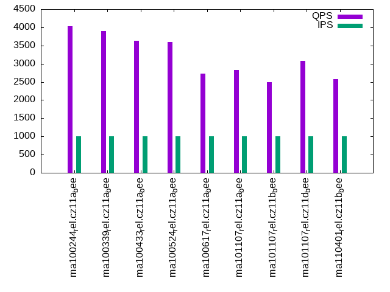

This is a report for the insert benchmark with 800M docs and 1 client(s). It is generated by scripts (bash, awk, sed) and Tufte might not be impressed. An overview of the insert benchmark is here and a short update is here. Below, by DBMS, I mean DBMS+version.config. An example is my8020.c10b40 where my means MySQL, 8020 is version 8.0.20 and c10b40 is the name for the configuration file.
The test server has 8 AMD cores, 16G RAM and an NVMe SSD. It is described here as the Beelink. The benchmark was run with 1 client and there were 1 or 3 connections per client (1 for queries or inserts without rate limits, 1+1 for rate limited inserts+deletes). It uses 1 table. It loads 800M rows per table without secondary indexes, creates 3 secondary indexes per table, then inserts 4m+1m rows per table with a delete per insert to avoid growing the table. It then does 6 read+write tests for 1800s each that do queries as fast as possible with 100,100,500,500,1000,1000 inserts/s and the same for deletes/s per client concurrent with the queries. The database is larger than memory. Clients and the DBMS share one server. The per-database configs are in the per-database subdirectories here.
The tested DBMS are:
The numbers are inserts/s for l.i0, l.i1 and l.i2, indexed docs (or rows) /s for l.x and queries/s for qr100, qp100 thru qr1000, qp1000" The values are the average rate over the entire test for inserts (IPS) and queries (QPS). The range of values for IPS and QPS is split into 3 parts: bottom 25%, middle 50%, top 25%. Values in the bottom 25% have a red background, values in the top 25% have a green background and values in the middle have no color. A gray background is used for values that can be ignored because the DBMS did not sustain the target insert rate. Red backgrounds are not used when the minimum value is within 80% of the max value.
| dbms | l.i0 | l.x | l.i1 | l.i2 | qr100 | qp100 | qr500 | qp500 | qr1000 | qp1000 |
|---|---|---|---|---|---|---|---|---|---|---|
| ma100244_rel.cz11a_bee | 88183 | 120682 | 1459 | 1580 | 3902 | 637 | 4031 | 542 | 4031 | 518 |
| ma100339_rel.cz11a_bee | 79713 | 117199 | 1404 | 1550 | 3769 | 637 | 3815 | 539 | 3893 | 517 |
| ma100433_rel.cz11a_bee | 77685 | 118361 | 1386 | 1541 | 3496 | 630 | 3565 | 535 | 3638 | 512 |
| ma100524_rel.cz11a_bee | 76431 | 101176 | 1492 | 1745 | 3477 | 632 | 3528 | 572 | 3595 | 498 |
| ma100617_rel.cz11a_bee | 79341 | 93567 | 1063 | 1172 | 3343 | 600 | 3093 | 484 | 2724 | 395 |
| ma101107_rel.cz11a_bee | 78194 | 98888 | 1070 | 1167 | 3355 | 588 | 3148 | 478 | 2822 | 391 |
| ma101107_rel.cz11b_bee | 77768 | 98765 | 961 | 1027 | 3326 | 579 | 3074 | 450 | 2500 | 354 |
| ma101107_rel.cz11d_bee | 78647 | 98985 | 1340 | 1701 | 3321 | 592 | 3189 | 514 | 3086 | 463 |
| ma110401_rel.cz11b_bee | 76431 | 97931 | 978 | 1081 | 3393 | 579 | 3098 | 460 | 2584 | 367 |
This table has relative throughput, throughput for the DBMS relative to the DBMS in the first line, using the absolute throughput from the previous table. Values less than 0.95 have a yellow background. Values greater than 1.05 have a blue background.
| dbms | l.i0 | l.x | l.i1 | l.i2 | qr100 | qp100 | qr500 | qp500 | qr1000 | qp1000 |
|---|---|---|---|---|---|---|---|---|---|---|
| ma100244_rel.cz11a_bee | 1.00 | 1.00 | 1.00 | 1.00 | 1.00 | 1.00 | 1.00 | 1.00 | 1.00 | 1.00 |
| ma100339_rel.cz11a_bee | 0.90 | 0.97 | 0.96 | 0.98 | 0.97 | 1.00 | 0.95 | 0.99 | 0.97 | 1.00 |
| ma100433_rel.cz11a_bee | 0.88 | 0.98 | 0.95 | 0.98 | 0.90 | 0.99 | 0.88 | 0.99 | 0.90 | 0.99 |
| ma100524_rel.cz11a_bee | 0.87 | 0.84 | 1.02 | 1.10 | 0.89 | 0.99 | 0.88 | 1.06 | 0.89 | 0.96 |
| ma100617_rel.cz11a_bee | 0.90 | 0.78 | 0.73 | 0.74 | 0.86 | 0.94 | 0.77 | 0.89 | 0.68 | 0.76 |
| ma101107_rel.cz11a_bee | 0.89 | 0.82 | 0.73 | 0.74 | 0.86 | 0.92 | 0.78 | 0.88 | 0.70 | 0.75 |
| ma101107_rel.cz11b_bee | 0.88 | 0.82 | 0.66 | 0.65 | 0.85 | 0.91 | 0.76 | 0.83 | 0.62 | 0.68 |
| ma101107_rel.cz11d_bee | 0.89 | 0.82 | 0.92 | 1.08 | 0.85 | 0.93 | 0.79 | 0.95 | 0.77 | 0.89 |
| ma110401_rel.cz11b_bee | 0.87 | 0.81 | 0.67 | 0.68 | 0.87 | 0.91 | 0.77 | 0.85 | 0.64 | 0.71 |
This lists the average rate of inserts/s for the tests that do inserts concurrent with queries. For such tests the query rate is listed in the table above. The read+write tests are setup so that the insert rate should match the target rate every second. Cells that are not at least 95% of the target have a red background to indicate a failure to satisfy the target.
| dbms | qr100.L1 | qp100.L2 | qr500.L3 | qp500.L4 | qr1000.L5 | qp1000.L6 |
|---|---|---|---|---|---|---|
| ma100244_rel.cz11a_bee | 100 | 100 | 499 | 499 | 998 | 999 |
| ma100339_rel.cz11a_bee | 100 | 100 | 499 | 499 | 999 | 999 |
| ma100433_rel.cz11a_bee | 100 | 100 | 499 | 499 | 999 | 999 |
| ma100524_rel.cz11a_bee | 100 | 100 | 499 | 499 | 998 | 999 |
| ma100617_rel.cz11a_bee | 100 | 100 | 499 | 499 | 999 | 999 |
| ma101107_rel.cz11a_bee | 100 | 100 | 499 | 499 | 999 | 998 |
| ma101107_rel.cz11b_bee | 100 | 100 | 499 | 499 | 999 | 999 |
| ma101107_rel.cz11d_bee | 100 | 100 | 499 | 499 | 998 | 999 |
| ma110401_rel.cz11b_bee | 100 | 100 | 499 | 499 | 999 | 999 |
| target | 100 | 100 | 500 | 500 | 1000 | 1000 |
l.i0: load without secondary indexes. Graphs for performance per 1-second interval are here.
Average throughput:
Insert response time histogram: each cell has the percentage of responses that take <= the time in the header and max is the max response time in seconds. For the max column values in the top 25% of the range have a red background and in the bottom 25% of the range have a green background. The red background is not used when the min value is within 80% of the max value.
| dbms | 256us | 1ms | 4ms | 16ms | 64ms | 256ms | 1s | 4s | 16s | gt | max |
|---|---|---|---|---|---|---|---|---|---|---|---|
| ma100244_rel.cz11a_bee | 64.804 | 34.715 | 0.312 | 0.165 | 0.004 | 0.196 | |||||
| ma100339_rel.cz11a_bee | 0.860 | 98.568 | 0.440 | 0.129 | 0.004 | 0.153 | |||||
| ma100433_rel.cz11a_bee | 0.081 | 99.326 | 0.453 | 0.135 | 0.004 | 0.153 | |||||
| ma100524_rel.cz11a_bee | 0.927 | 98.647 | 0.233 | 0.190 | 0.003 | 0.155 | |||||
| ma100617_rel.cz11a_bee | 0.456 | 99.323 | 0.076 | 0.141 | 0.004 | 0.196 | |||||
| ma101107_rel.cz11a_bee | 0.743 | 99.006 | 0.201 | 0.046 | 0.004 | 0.210 | |||||
| ma101107_rel.cz11b_bee | 0.612 | 99.129 | 0.214 | 0.040 | 0.005 | 0.236 | |||||
| ma101107_rel.cz11d_bee | 0.715 | 99.037 | 0.210 | 0.034 | 0.004 | 0.198 | |||||
| ma110401_rel.cz11b_bee | 0.195 | 99.544 | 0.216 | 0.040 | 0.005 | 0.198 |
Performance metrics for the DBMS listed above. Some are normalized by throughput, others are not. Legend for results is here.
ips qps rps rmbps wps wmbps rpq rkbpq wpi wkbpi csps cpups cspq cpupq dbgb1 dbgb2 rss maxop p50 p99 tag 88183 0 0 0.0 531.8 34.7 0.000 0.000 0.006 0.402 9803 22.4 0.111 20 52.6 68.4 10.5 0.196 88303 76611 ma100244_rel.cz11a_bee 79713 0 0 0.0 595.6 36.6 0.000 0.000 0.007 0.470 26885 35.3 0.337 35 52.6 68.4 10.5 0.153 79910 70104 ma100339_rel.cz11a_bee 77685 0 0 0.0 589.3 35.7 0.000 0.000 0.008 0.470 26216 35.4 0.337 36 52.6 68.4 NA 0.153 77913 69024 ma100433_rel.cz11a_bee 76431 0 0 0.0 695.7 29.3 0.000 0.000 0.009 0.393 37250 27.4 0.487 29 52.6 68.4 10.3 0.155 76613 69323 ma100524_rel.cz11a_bee 79341 0 0 0.0 393.8 22.5 0.000 0.000 0.005 0.291 10872 25.7 0.137 26 52.6 68.4 10.3 0.196 79610 71403 ma100617_rel.cz11a_bee 78194 0 600 2.3 388.5 22.9 0.008 0.031 0.005 0.300 11954 25.6 0.153 26 52.6 68.4 10.3 0.210 78313 68622 ma101107_rel.cz11a_bee 77768 0 597 2.3 392.1 22.7 0.008 0.031 0.005 0.300 11935 25.6 0.153 26 52.6 68.4 10.3 0.236 77954 67823 ma101107_rel.cz11b_bee 78647 0 602 2.4 390.9 23.0 0.008 0.031 0.005 0.300 12034 25.7 0.153 26 52.6 68.4 10.3 0.198 78910 68957 ma101107_rel.cz11d_bee 76431 0 585 2.3 385.5 22.4 0.008 0.031 0.005 0.300 12003 25.5 0.157 27 52.6 68.4 10.3 0.198 76515 66726 ma110401_rel.cz11b_bee
l.x: create secondary indexes.
Average throughput:
Performance metrics for the DBMS listed above. Some are normalized by throughput, others are not. Legend for results is here.
ips qps rps rmbps wps wmbps rpq rkbpq wpi wkbpi csps cpups cspq cpupq dbgb1 dbgb2 rss maxop p50 p99 tag 120682 0 783 121.9 901.7 143.9 0.006 1.035 0.007 1.221 5992 12.4 0.050 8 121.1 137.0 10.7 0.002 NA NA ma100244_rel.cz11a_bee 117199 0 766 118.4 877.3 139.7 0.007 1.034 0.007 1.220 5921 12.4 0.051 8 121.1 137.0 10.7 0.002 NA NA ma100339_rel.cz11a_bee 118361 0 774 119.6 889.5 141.2 0.007 1.035 0.008 1.222 5949 12.4 0.050 8 119.9 135.7 NA 0.002 NA NA ma100433_rel.cz11a_bee 101176 0 665 102.2 763.7 114.1 0.007 1.035 0.008 1.155 3697 12.0 0.037 9 119.9 135.7 10.4 0.002 NA NA ma100524_rel.cz11a_bee 93567 0 631 94.5 741.9 105.8 0.007 1.034 0.008 1.158 3317 11.3 0.035 10 119.9 135.7 10.3 0.002 NA NA ma100617_rel.cz11a_bee 98888 0 632 99.9 730.6 111.1 0.006 1.034 0.007 1.151 3320 11.9 0.034 10 119.9 135.7 10.3 0.002 NA NA ma101107_rel.cz11a_bee 98765 0 634 99.8 727.6 111.0 0.006 1.035 0.007 1.151 3343 11.9 0.034 10 119.9 135.7 10.3 0.002 NA NA ma101107_rel.cz11b_bee 98985 0 644 100.0 736.9 111.2 0.007 1.034 0.007 1.151 3341 11.9 0.034 10 119.9 135.7 10.3 0.002 NA NA ma101107_rel.cz11d_bee 97931 0 630 98.9 718.3 110.0 0.006 1.035 0.007 1.150 3284 11.9 0.034 10 119.9 135.7 10.3 0.003 NA NA ma110401_rel.cz11b_bee
l.i1: continue load after secondary indexes created with 50 inserts per transaction. Graphs for performance per 1-second interval are here.
Average throughput:
Insert response time histogram: each cell has the percentage of responses that take <= the time in the header and max is the max response time in seconds. For the max column values in the top 25% of the range have a red background and in the bottom 25% of the range have a green background. The red background is not used when the min value is within 80% of the max value.
| dbms | 256us | 1ms | 4ms | 16ms | 64ms | 256ms | 1s | 4s | 16s | gt | max |
|---|---|---|---|---|---|---|---|---|---|---|---|
| ma100244_rel.cz11a_bee | 0.100 | 91.214 | 8.686 | 0.191 | |||||||
| ma100339_rel.cz11a_bee | 0.054 | 90.364 | 9.582 | 0.234 | |||||||
| ma100433_rel.cz11a_bee | 0.048 | 89.985 | 9.965 | 0.001 | 0.001 | 3.450 | |||||
| ma100524_rel.cz11a_bee | 0.159 | 92.153 | 7.688 | 0.001 | 3.956 | ||||||
| ma100617_rel.cz11a_bee | 84.450 | 15.545 | 0.004 | 0.001 | 3.999 | ||||||
| ma101107_rel.cz11a_bee | 84.365 | 15.629 | 0.005 | 0.001 | 3.772 | ||||||
| ma101107_rel.cz11b_bee | 77.414 | 22.541 | 0.044 | 0.001 | 4.085 | ||||||
| ma101107_rel.cz11d_bee | 9.420 | 79.530 | 11.048 | 0.001 | 0.001 | 4.074 | |||||
| ma110401_rel.cz11b_bee | 77.763 | 22.236 | 0.001 | 4.258 |
Delete response time histogram: each cell has the percentage of responses that take <= the time in the header and max is the max response time in seconds. For the max column values in the top 25% of the range have a red background and in the bottom 25% of the range have a green background. The red background is not used when the min value is within 80% of the max value.
| dbms | 256us | 1ms | 4ms | 16ms | 64ms | 256ms | 1s | 4s | 16s | gt | max |
|---|---|---|---|---|---|---|---|---|---|---|---|
| ma100244_rel.cz11a_bee | 76.355 | 23.468 | 0.178 | 0.092 | |||||||
| ma100339_rel.cz11a_bee | 76.850 | 22.945 | 0.205 | 0.144 | |||||||
| ma100433_rel.cz11a_bee | 76.970 | 22.739 | 0.290 | 0.001 | 3.312 | ||||||
| ma100524_rel.cz11a_bee | 76.207 | 23.339 | 0.453 | 0.001 | 3.880 | ||||||
| ma100617_rel.cz11a_bee | 4.419 | 84.737 | 10.841 | 0.001 | 0.001 | 3.927 | |||||
| ma101107_rel.cz11a_bee | 4.051 | 85.021 | 10.926 | 0.001 | 3.712 | ||||||
| ma101107_rel.cz11b_bee | 3.084 | 88.833 | 8.066 | 0.016 | 0.001 | 4.021 | |||||
| ma101107_rel.cz11d_bee | 0.579 | 93.454 | 2.904 | 3.062 | 0.001 | 3.989 | |||||
| ma110401_rel.cz11b_bee | 3.148 | 89.179 | 7.673 | 0.001 | 4.147 |
Performance metrics for the DBMS listed above. Some are normalized by throughput, others are not. Legend for results is here.
ips qps rps rmbps wps wmbps rpq rkbpq wpi wkbpi csps cpups cspq cpupq dbgb1 dbgb2 rss maxop p50 p99 tag 1459 0 9220 144.1 11070.3 347.6 6.321 101.137 7.589 243.988 56450 23.4 38.699 1283 144.4 160.3 10.5 0.191 1449 1049 ma100244_rel.cz11a_bee 1404 0 8871 138.6 10661.7 334.7 6.320 101.127 7.596 244.232 59347 21.7 42.285 1237 144.4 160.3 10.5 0.234 1399 949 ma100339_rel.cz11a_bee 1386 0 8798 137.5 10857.2 340.5 6.350 101.599 7.836 251.661 58593 21.8 42.290 1259 144.4 160.3 NA 3.450 1398 750 ma100433_rel.cz11a_bee 1492 0 9407 147.0 9954.3 293.1 6.305 100.886 6.672 201.205 83468 18.0 55.947 965 144.4 160.2 10.2 3.956 1548 849 ma100524_rel.cz11a_bee 1063 0 6762 105.7 6418.0 187.7 6.360 101.757 6.036 180.734 60959 12.0 57.336 903 144.4 160.2 10.1 3.999 1099 749 ma100617_rel.cz11a_bee 1070 0 6860 106.5 6305.4 186.7 6.412 101.951 5.894 178.714 60663 11.8 56.705 882 144.4 160.2 10.1 3.772 1099 749 ma101107_rel.cz11a_bee 961 0 6153 95.6 5812.3 169.3 6.404 101.838 6.049 180.481 54631 10.4 56.860 866 144.4 160.2 10.1 4.085 949 550 ma101107_rel.cz11b_bee 1340 0 5936 91.9 6595.4 192.7 4.432 70.292 4.924 147.290 59527 13.4 44.439 800 148.8 165.0 10.8 4.074 1249 749 ma101107_rel.cz11d_bee 978 0 6296 97.8 5847.9 169.9 6.439 102.390 5.980 177.928 55315 10.6 56.565 867 144.4 160.2 10.1 4.258 949 599 ma110401_rel.cz11b_bee
l.i2: continue load after secondary indexes created with 5 inserts per transaction. Graphs for performance per 1-second interval are here.
Average throughput:
Insert response time histogram: each cell has the percentage of responses that take <= the time in the header and max is the max response time in seconds. For the max column values in the top 25% of the range have a red background and in the bottom 25% of the range have a green background. The red background is not used when the min value is within 80% of the max value.
| dbms | 256us | 1ms | 4ms | 16ms | 64ms | 256ms | 1s | 4s | 16s | gt | max |
|---|---|---|---|---|---|---|---|---|---|---|---|
| ma100244_rel.cz11a_bee | 0.005 | 84.590 | 14.880 | 0.526 | 0.056 | ||||||
| ma100339_rel.cz11a_bee | 0.005 | 84.728 | 14.730 | 0.536 | 0.001 | 0.137 | |||||
| ma100433_rel.cz11a_bee | 0.003 | 84.844 | 14.601 | 0.551 | 0.052 | ||||||
| ma100524_rel.cz11a_bee | 0.006 | 91.814 | 8.091 | 0.087 | 0.001 | 0.001 | 0.409 | ||||
| ma100617_rel.cz11a_bee | 0.003 | 90.401 | 8.168 | 0.347 | 1.081 | 0.143 | |||||
| ma101107_rel.cz11a_bee | 0.001 | 89.945 | 8.538 | 0.428 | 1.088 | 0.141 | |||||
| ma101107_rel.cz11b_bee | 0.001 | 70.451 | 27.595 | 1.073 | 0.881 | 0.142 | |||||
| ma101107_rel.cz11d_bee | 4.078 | 89.970 | 5.248 | 0.154 | 0.549 | 0.173 | |||||
| ma110401_rel.cz11b_bee | 0.003 | 68.868 | 29.822 | 0.546 | 0.762 | 0.155 |
Delete response time histogram: each cell has the percentage of responses that take <= the time in the header and max is the max response time in seconds. For the max column values in the top 25% of the range have a red background and in the bottom 25% of the range have a green background. The red background is not used when the min value is within 80% of the max value.
| dbms | 256us | 1ms | 4ms | 16ms | 64ms | 256ms | 1s | 4s | 16s | gt | max |
|---|---|---|---|---|---|---|---|---|---|---|---|
| ma100244_rel.cz11a_bee | 0.082 | 89.892 | 9.767 | 0.259 | 0.054 | ||||||
| ma100339_rel.cz11a_bee | 0.065 | 89.992 | 9.665 | 0.278 | 0.001 | 0.074 | |||||
| ma100433_rel.cz11a_bee | 0.051 | 89.949 | 9.724 | 0.276 | 0.051 | ||||||
| ma100524_rel.cz11a_bee | 0.135 | 93.576 | 6.260 | 0.029 | 0.044 | ||||||
| ma100617_rel.cz11a_bee | 0.019 | 93.837 | 5.049 | 0.112 | 0.983 | 0.137 | |||||
| ma101107_rel.cz11a_bee | 0.014 | 93.919 | 4.939 | 0.129 | 1.000 | 0.140 | |||||
| ma101107_rel.cz11b_bee | 0.011 | 79.046 | 19.293 | 0.889 | 0.761 | 0.139 | |||||
| ma101107_rel.cz11d_bee | 6.868 | 91.195 | 1.412 | 0.081 | 0.443 | 0.168 | |||||
| ma110401_rel.cz11b_bee | 0.009 | 77.700 | 21.218 | 0.376 | 0.697 | 0.155 |
Performance metrics for the DBMS listed above. Some are normalized by throughput, others are not. Legend for results is here.
ips qps rps rmbps wps wmbps rpq rkbpq wpi wkbpi csps cpups cspq cpupq dbgb1 dbgb2 rss maxop p50 p99 tag 1580 0 9202 143.8 10747.5 335.5 5.825 93.197 6.804 217.478 67935 28.5 43.005 1443 144.4 160.3 10.5 0.056 1573 1383 ma100244_rel.cz11a_bee 1550 0 9028 141.1 10515.9 328.4 5.823 93.173 6.783 216.885 72516 27.6 46.776 1424 144.4 160.3 10.5 0.137 1553 1349 ma100339_rel.cz11a_bee 1541 0 9007 140.7 10499.2 327.7 5.846 93.534 6.814 217.797 71426 27.7 46.356 1438 144.4 160.3 NA 0.052 1534 1344 ma100433_rel.cz11a_bee 1745 0 10101 157.8 9842.8 295.4 5.788 92.603 5.640 173.322 102460 22.9 58.710 1050 144.4 160.2 10.2 0.409 1739 1618 ma100524_rel.cz11a_bee 1172 0 6870 107.3 6116.6 183.9 5.860 93.762 5.218 160.633 63447 14.9 54.122 1017 144.4 160.2 10.1 0.143 1179 1019 ma100617_rel.cz11a_bee 1167 0 7189 108.2 6038.7 182.6 6.161 94.946 5.175 160.232 63665 14.8 54.564 1015 144.4 160.2 10.1 0.141 1174 989 ma101107_rel.cz11a_bee 1027 0 6327 95.2 5388.9 159.2 6.163 94.924 5.249 158.748 55896 13.0 54.448 1013 144.4 160.2 10.1 0.142 1069 459 ma101107_rel.cz11b_bee 1701 0 5877 85.5 6142.1 184.9 3.456 51.486 3.612 111.360 62721 20.0 36.882 941 148.8 165.4 11.0 0.173 1703 1458 ma101107_rel.cz11d_bee 1081 0 6696 100.7 5725.4 168.1 6.194 95.414 5.296 159.190 59109 13.4 54.680 992 144.4 160.2 10.1 0.155 1094 799 ma110401_rel.cz11b_bee
qr100.L1: range queries with 100 insert/s per client. Graphs for performance per 1-second interval are here.
Average throughput:
Query response time histogram: each cell has the percentage of responses that take <= the time in the header and max is the max response time in seconds. For max values in the top 25% of the range have a red background and in the bottom 25% of the range have a green background. The red background is not used when the min value is within 80% of the max value.
| dbms | 256us | 1ms | 4ms | 16ms | 64ms | 256ms | 1s | 4s | 16s | gt | max |
|---|---|---|---|---|---|---|---|---|---|---|---|
| ma100244_rel.cz11a_bee | 69.525 | 30.309 | 0.153 | 0.014 | 0.014 | ||||||
| ma100339_rel.cz11a_bee | 65.562 | 34.259 | 0.165 | 0.015 | nonzero | 0.022 | |||||
| ma100433_rel.cz11a_bee | 46.549 | 53.254 | 0.179 | 0.017 | nonzero | 0.017 | |||||
| ma100524_rel.cz11a_bee | 46.968 | 52.845 | 0.169 | 0.018 | 0.012 | ||||||
| ma100617_rel.cz11a_bee | 41.183 | 58.600 | 0.190 | 0.024 | 0.001 | 0.001 | 0.096 | ||||
| ma101107_rel.cz11a_bee | 44.006 | 55.780 | 0.188 | 0.023 | 0.001 | 0.001 | 0.090 | ||||
| ma101107_rel.cz11b_bee | 40.395 | 59.379 | 0.199 | 0.025 | 0.001 | 0.001 | 0.091 | ||||
| ma101107_rel.cz11d_bee | 38.541 | 61.239 | 0.191 | 0.028 | 0.001 | 0.001 | 0.088 | ||||
| ma110401_rel.cz11b_bee | 47.900 | 51.884 | 0.189 | 0.024 | 0.002 | 0.001 | 0.091 |
Insert response time histogram: each cell has the percentage of responses that take <= the time in the header and max is the max response time in seconds. For max values in the top 25% of the range have a red background and in the bottom 25% of the range have a green background. The red background is not used when the min value is within 80% of the max value.
| dbms | 256us | 1ms | 4ms | 16ms | 64ms | 256ms | 1s | 4s | 16s | gt | max |
|---|---|---|---|---|---|---|---|---|---|---|---|
| ma100244_rel.cz11a_bee | 0.306 | 99.611 | 0.083 | 0.080 | |||||||
| ma100339_rel.cz11a_bee | 0.083 | 99.194 | 0.722 | 0.102 | |||||||
| ma100433_rel.cz11a_bee | 0.056 | 99.417 | 0.528 | 0.095 | |||||||
| ma100524_rel.cz11a_bee | 0.167 | 99.833 | 0.042 | ||||||||
| ma100617_rel.cz11a_bee | 0.139 | 93.889 | 5.972 | 0.129 | |||||||
| ma101107_rel.cz11a_bee | 0.222 | 93.917 | 5.861 | 0.123 | |||||||
| ma101107_rel.cz11b_bee | 0.167 | 94.000 | 5.833 | 0.135 | |||||||
| ma101107_rel.cz11d_bee | 51.861 | 45.889 | 2.250 | 0.121 | |||||||
| ma110401_rel.cz11b_bee | 0.278 | 93.944 | 5.778 | 0.133 |
Delete response time histogram: each cell has the percentage of responses that take <= the time in the header and max is the max response time in seconds. For max values in the top 25% of the range have a red background and in the bottom 25% of the range have a green background. The red background is not used when the min value is within 80% of the max value.
| dbms | 256us | 1ms | 4ms | 16ms | 64ms | 256ms | 1s | 4s | 16s | gt | max |
|---|---|---|---|---|---|---|---|---|---|---|---|
| ma100244_rel.cz11a_bee | 59.306 | 40.667 | 0.028 | 0.069 | |||||||
| ma100339_rel.cz11a_bee | 58.583 | 41.306 | 0.111 | 0.077 | |||||||
| ma100433_rel.cz11a_bee | 57.972 | 41.972 | 0.056 | 0.082 | |||||||
| ma100524_rel.cz11a_bee | 44.500 | 55.500 | 0.031 | ||||||||
| ma100617_rel.cz11a_bee | 44.528 | 51.000 | 4.472 | 0.123 | |||||||
| ma101107_rel.cz11a_bee | 44.806 | 50.972 | 4.222 | 0.115 | |||||||
| ma101107_rel.cz11b_bee | 44.694 | 50.778 | 4.528 | 0.126 | |||||||
| ma101107_rel.cz11d_bee | 5.778 | 93.194 | 0.722 | 0.306 | 0.101 | ||||||
| ma110401_rel.cz11b_bee | 44.444 | 51.056 | 4.500 | 0.120 |
Performance metrics for the DBMS listed above. Some are normalized by throughput, others are not. Legend for results is here.
ips qps rps rmbps wps wmbps rpq rkbpq wpi wkbpi csps cpups cspq cpupq dbgb1 dbgb2 rss maxop p50 p99 tag 100 3902 631 9.9 1372.1 42.0 0.162 2.586 13.748 430.430 21705 14.2 5.562 291 144.4 160.3 10.5 0.014 3883 2781 ma100244_rel.cz11a_bee 100 3769 630 9.8 1372.4 42.0 0.167 2.675 13.751 430.472 21444 14.2 5.690 301 144.4 160.3 10.5 0.022 3756 2717 ma100339_rel.cz11a_bee 100 3496 633 9.9 1367.8 41.8 0.181 2.897 13.705 429.044 20261 14.1 5.795 323 144.4 160.3 NA 0.017 3484 2525 ma100433_rel.cz11a_bee 100 3477 628 9.8 251.9 8.2 0.180 2.888 2.527 84.180 17800 13.7 5.119 315 144.4 160.2 10.2 0.012 3468 2525 ma100524_rel.cz11a_bee 100 3343 632 9.9 261.7 8.3 0.189 3.025 2.623 85.392 16535 13.1 4.947 314 144.4 160.2 10.1 0.096 3340 2589 ma100617_rel.cz11a_bee 100 3355 637 9.9 258.5 8.3 0.190 3.022 2.593 84.817 16598 13.1 4.947 312 144.4 160.2 10.1 0.090 3356 2573 ma101107_rel.cz11a_bee 100 3326 636 9.9 263.4 8.3 0.191 3.046 2.640 84.677 16483 13.1 4.955 315 144.4 160.2 10.1 0.091 3324 2461 ma101107_rel.cz11b_bee 100 3321 373 5.8 151.3 5.0 0.112 1.782 1.516 51.743 15057 13.0 4.534 313 148.8 165.4 10.1 0.088 3324 2317 ma101107_rel.cz11d_bee 100 3393 638 9.9 274.4 8.6 0.188 2.995 2.750 88.561 16777 13.1 4.944 309 144.4 160.2 10.1 0.091 3388 2637 ma110401_rel.cz11b_bee
qp100.L2: point queries with 100 insert/s per client. Graphs for performance per 1-second interval are here.
Average throughput:
Query response time histogram: each cell has the percentage of responses that take <= the time in the header and max is the max response time in seconds. For max values in the top 25% of the range have a red background and in the bottom 25% of the range have a green background. The red background is not used when the min value is within 80% of the max value.
| dbms | 256us | 1ms | 4ms | 16ms | 64ms | 256ms | 1s | 4s | 16s | gt | max |
|---|---|---|---|---|---|---|---|---|---|---|---|
| ma100244_rel.cz11a_bee | 0.484 | 98.987 | 0.527 | 0.002 | 0.036 | ||||||
| ma100339_rel.cz11a_bee | 0.462 | 99.027 | 0.508 | 0.003 | 0.042 | ||||||
| ma100433_rel.cz11a_bee | 0.344 | 99.137 | 0.516 | 0.002 | 0.038 | ||||||
| ma100524_rel.cz11a_bee | 0.353 | 99.626 | 0.020 | 0.001 | 0.033 | ||||||
| ma100617_rel.cz11a_bee | 0.318 | 99.039 | 0.246 | 0.390 | 0.007 | 0.090 | |||||
| ma101107_rel.cz11a_bee | 0.213 | 99.139 | 0.251 | 0.392 | 0.006 | 0.086 | |||||
| ma101107_rel.cz11b_bee | 0.196 | 99.039 | 0.368 | 0.391 | 0.006 | 0.083 | |||||
| ma101107_rel.cz11d_bee | 0.223 | 99.263 | 0.136 | 0.372 | 0.007 | 0.086 | |||||
| ma110401_rel.cz11b_bee | 0.247 | 98.701 | 0.656 | 0.391 | 0.005 | 0.085 |
Insert response time histogram: each cell has the percentage of responses that take <= the time in the header and max is the max response time in seconds. For max values in the top 25% of the range have a red background and in the bottom 25% of the range have a green background. The red background is not used when the min value is within 80% of the max value.
| dbms | 256us | 1ms | 4ms | 16ms | 64ms | 256ms | 1s | 4s | 16s | gt | max |
|---|---|---|---|---|---|---|---|---|---|---|---|
| ma100244_rel.cz11a_bee | 0.056 | 99.556 | 0.389 | 0.117 | |||||||
| ma100339_rel.cz11a_bee | 99.250 | 0.750 | 0.128 | ||||||||
| ma100433_rel.cz11a_bee | 0.028 | 99.111 | 0.861 | 0.128 | |||||||
| ma100524_rel.cz11a_bee | 99.944 | 0.056 | 0.077 | ||||||||
| ma100617_rel.cz11a_bee | 97.444 | 2.556 | 0.110 | ||||||||
| ma101107_rel.cz11a_bee | 98.194 | 1.806 | 0.100 | ||||||||
| ma101107_rel.cz11b_bee | 96.917 | 3.083 | 0.105 | ||||||||
| ma101107_rel.cz11d_bee | 68.639 | 30.472 | 0.889 | 0.099 | |||||||
| ma110401_rel.cz11b_bee | 93.611 | 6.389 | 0.103 |
Delete response time histogram: each cell has the percentage of responses that take <= the time in the header and max is the max response time in seconds. For max values in the top 25% of the range have a red background and in the bottom 25% of the range have a green background. The red background is not used when the min value is within 80% of the max value.
| dbms | 256us | 1ms | 4ms | 16ms | 64ms | 256ms | 1s | 4s | 16s | gt | max |
|---|---|---|---|---|---|---|---|---|---|---|---|
| ma100244_rel.cz11a_bee | 85.361 | 14.417 | 0.222 | 0.088 | |||||||
| ma100339_rel.cz11a_bee | 85.444 | 14.167 | 0.389 | 0.094 | |||||||
| ma100433_rel.cz11a_bee | 83.167 | 16.667 | 0.167 | 0.090 | |||||||
| ma100524_rel.cz11a_bee | 55.250 | 44.750 | 0.047 | ||||||||
| ma100617_rel.cz11a_bee | 40.556 | 57.833 | 1.611 | 0.097 | |||||||
| ma101107_rel.cz11a_bee | 42.000 | 57.139 | 0.861 | 0.092 | |||||||
| ma101107_rel.cz11b_bee | 38.056 | 60.417 | 1.528 | 0.099 | |||||||
| ma101107_rel.cz11d_bee | 6.528 | 88.667 | 4.722 | 0.083 | 0.085 | ||||||
| ma110401_rel.cz11b_bee | 13.333 | 83.611 | 3.056 | 0.099 |
Performance metrics for the DBMS listed above. Some are normalized by throughput, others are not. Legend for results is here.
ips qps rps rmbps wps wmbps rpq rkbpq wpi wkbpi csps cpups cspq cpupq dbgb1 dbgb2 rss maxop p50 p99 tag 100 637 6250 97.7 1360.7 41.6 9.805 156.883 13.634 426.476 20068 5.8 31.484 728 144.4 160.3 10.5 0.036 639 591 ma100244_rel.cz11a_bee 100 637 6241 97.5 1362.8 41.6 9.800 156.794 13.655 427.152 20265 5.7 31.818 716 144.4 160.3 10.5 0.042 639 591 ma100339_rel.cz11a_bee 100 630 6200 96.9 1361.0 41.6 9.849 157.583 13.637 426.587 20016 5.8 31.797 737 144.4 160.3 NA 0.038 639 591 ma100433_rel.cz11a_bee 100 632 6211 97.1 733.4 21.7 9.824 157.176 7.349 222.442 20436 5.6 32.320 708 144.4 160.2 10.3 0.033 639 559 ma100524_rel.cz11a_bee 100 600 5968 93.3 747.6 22.1 9.954 159.261 7.491 226.340 19051 5.4 31.772 720 144.4 160.2 10.1 0.090 607 511 ma100617_rel.cz11a_bee 100 588 5876 91.8 735.1 21.8 9.985 159.655 7.366 223.556 18767 5.4 31.890 734 144.4 160.2 10.1 0.086 591 495 ma101107_rel.cz11a_bee 100 579 5799 90.5 755.7 21.9 10.015 160.138 7.572 224.746 18619 5.4 32.156 746 144.4 160.2 10.1 0.083 591 479 ma101107_rel.cz11b_bee 100 592 5629 87.9 592.9 17.2 9.501 151.921 5.941 176.913 17172 5.1 28.983 689 148.8 165.4 10.1 0.086 607 495 ma101107_rel.cz11d_bee 100 579 5774 90.2 755.4 21.8 9.969 159.400 7.569 223.314 18484 5.3 31.913 732 144.4 160.2 10.1 0.085 591 463 ma110401_rel.cz11b_bee
qr500.L3: range queries with 500 insert/s per client. Graphs for performance per 1-second interval are here.
Average throughput:
Query response time histogram: each cell has the percentage of responses that take <= the time in the header and max is the max response time in seconds. For max values in the top 25% of the range have a red background and in the bottom 25% of the range have a green background. The red background is not used when the min value is within 80% of the max value.
| dbms | 256us | 1ms | 4ms | 16ms | 64ms | 256ms | 1s | 4s | 16s | gt | max |
|---|---|---|---|---|---|---|---|---|---|---|---|
| ma100244_rel.cz11a_bee | 74.360 | 25.414 | 0.196 | 0.030 | nonzero | 0.037 | |||||
| ma100339_rel.cz11a_bee | 68.181 | 31.570 | 0.215 | 0.034 | nonzero | 0.038 | |||||
| ma100433_rel.cz11a_bee | 53.314 | 46.417 | 0.233 | 0.037 | nonzero | 0.035 | |||||
| ma100524_rel.cz11a_bee | 52.090 | 47.584 | 0.266 | 0.059 | nonzero | 0.019 | |||||
| ma100617_rel.cz11a_bee | 39.140 | 60.501 | 0.287 | 0.053 | 0.008 | 0.012 | 0.093 | ||||
| ma101107_rel.cz11a_bee | 43.290 | 56.358 | 0.279 | 0.053 | 0.008 | 0.011 | 0.092 | ||||
| ma101107_rel.cz11b_bee | 39.444 | 60.080 | 0.387 | 0.070 | 0.008 | 0.010 | 0.094 | ||||
| ma101107_rel.cz11d_bee | 38.757 | 60.948 | 0.232 | 0.050 | 0.005 | 0.008 | 0.096 | ||||
| ma110401_rel.cz11b_bee | 42.379 | 57.147 | 0.397 | 0.057 | 0.010 | 0.010 | 0.086 |
Insert response time histogram: each cell has the percentage of responses that take <= the time in the header and max is the max response time in seconds. For max values in the top 25% of the range have a red background and in the bottom 25% of the range have a green background. The red background is not used when the min value is within 80% of the max value.
| dbms | 256us | 1ms | 4ms | 16ms | 64ms | 256ms | 1s | 4s | 16s | gt | max |
|---|---|---|---|---|---|---|---|---|---|---|---|
| ma100244_rel.cz11a_bee | 19.350 | 80.461 | 0.189 | 0.105 | |||||||
| ma100339_rel.cz11a_bee | 15.583 | 83.817 | 0.600 | 0.106 | |||||||
| ma100433_rel.cz11a_bee | 14.700 | 84.733 | 0.567 | 0.120 | |||||||
| ma100524_rel.cz11a_bee | 20.806 | 79.100 | 0.094 | 0.077 | |||||||
| ma100617_rel.cz11a_bee | 10.989 | 80.294 | 8.717 | 0.129 | |||||||
| ma101107_rel.cz11a_bee | 10.700 | 80.672 | 8.628 | 0.143 | |||||||
| ma101107_rel.cz11b_bee | 7.750 | 83.594 | 8.656 | 0.144 | |||||||
| ma101107_rel.cz11d_bee | 85.667 | 11.428 | 2.906 | 0.123 | |||||||
| ma110401_rel.cz11b_bee | 0.222 | 91.161 | 8.617 | 0.129 |
Delete response time histogram: each cell has the percentage of responses that take <= the time in the header and max is the max response time in seconds. For max values in the top 25% of the range have a red background and in the bottom 25% of the range have a green background. The red background is not used when the min value is within 80% of the max value.
| dbms | 256us | 1ms | 4ms | 16ms | 64ms | 256ms | 1s | 4s | 16s | gt | max |
|---|---|---|---|---|---|---|---|---|---|---|---|
| ma100244_rel.cz11a_bee | 79.089 | 20.900 | 0.011 | 0.075 | |||||||
| ma100339_rel.cz11a_bee | 78.461 | 21.517 | 0.022 | 0.084 | |||||||
| ma100433_rel.cz11a_bee | 78.678 | 21.283 | 0.039 | 0.109 | |||||||
| ma100524_rel.cz11a_bee | 78.122 | 21.872 | 0.006 | 0.064 | |||||||
| ma100617_rel.cz11a_bee | 67.422 | 24.933 | 7.644 | 0.121 | |||||||
| ma101107_rel.cz11a_bee | 68.717 | 23.778 | 7.506 | 0.119 | |||||||
| ma101107_rel.cz11b_bee | 61.761 | 31.111 | 7.128 | 0.124 | |||||||
| ma101107_rel.cz11d_bee | 16.217 | 82.450 | 0.344 | 0.989 | 0.106 | ||||||
| ma110401_rel.cz11b_bee | 51.222 | 41.372 | 7.406 | 0.117 |
Performance metrics for the DBMS listed above. Some are normalized by throughput, others are not. Legend for results is here.
ips qps rps rmbps wps wmbps rpq rkbpq wpi wkbpi csps cpups cspq cpupq dbgb1 dbgb2 rss maxop p50 p99 tag 499 4031 2930 45.8 5474.3 168.2 0.727 11.629 10.968 345.093 42095 19.6 10.444 389 144.4 160.3 10.5 0.037 4030 2350 ma100244_rel.cz11a_bee 499 3815 2926 45.7 5474.7 168.2 0.767 12.275 10.969 345.082 44123 19.5 11.567 409 144.4 160.3 10.5 0.038 3820 2445 ma100339_rel.cz11a_bee 499 3565 2940 45.9 5447.1 167.4 0.825 13.194 10.914 343.362 42435 19.4 11.903 435 144.4 160.3 NA 0.035 3564 2205 ma100433_rel.cz11a_bee 499 3528 2925 45.7 3580.8 107.2 0.829 13.267 7.175 220.032 43546 17.2 12.344 390 144.4 160.2 10.3 0.019 3532 2237 ma100524_rel.cz11a_bee 499 3093 2940 45.9 2297.9 69.4 0.950 15.206 4.604 142.376 34738 15.6 11.231 403 144.4 160.2 10.1 0.093 3116 1918 ma100617_rel.cz11a_bee 499 3148 2960 46.0 2284.1 69.4 0.940 14.960 4.576 142.347 34921 15.6 11.091 396 144.4 160.2 10.1 0.092 3164 1950 ma101107_rel.cz11a_bee 499 3074 2958 46.0 2346.8 69.8 0.962 15.311 4.702 143.226 34884 15.7 11.347 409 144.4 160.2 10.1 0.094 3100 1903 ma101107_rel.cz11b_bee 499 3189 1616 25.0 1645.5 49.8 0.507 8.032 3.297 102.213 26992 15.2 8.464 381 148.8 165.6 10.1 0.096 3213 2285 ma101107_rel.cz11d_bee 499 3098 2980 46.3 2369.3 70.3 0.962 15.309 4.747 144.284 35073 15.6 11.322 403 144.4 160.2 10.1 0.086 3116 1871 ma110401_rel.cz11b_bee
qp500.L4: point queries with 500 insert/s per client. Graphs for performance per 1-second interval are here.
Average throughput:
Query response time histogram: each cell has the percentage of responses that take <= the time in the header and max is the max response time in seconds. For max values in the top 25% of the range have a red background and in the bottom 25% of the range have a green background. The red background is not used when the min value is within 80% of the max value.
| dbms | 256us | 1ms | 4ms | 16ms | 64ms | 256ms | 1s | 4s | 16s | gt | max |
|---|---|---|---|---|---|---|---|---|---|---|---|
| ma100244_rel.cz11a_bee | 0.023 | 96.094 | 3.868 | 0.014 | 0.046 | ||||||
| ma100339_rel.cz11a_bee | 0.021 | 96.012 | 3.944 | 0.023 | 0.047 | ||||||
| ma100433_rel.cz11a_bee | 0.014 | 96.045 | 3.918 | 0.023 | 0.039 | ||||||
| ma100524_rel.cz11a_bee | 0.022 | 97.865 | 2.103 | 0.009 | 0.056 | ||||||
| ma100617_rel.cz11a_bee | 0.021 | 97.798 | 1.558 | 0.589 | 0.034 | 0.093 | |||||
| ma101107_rel.cz11a_bee | 0.011 | 97.738 | 1.621 | 0.613 | 0.016 | 0.082 | |||||
| ma101107_rel.cz11b_bee | 0.011 | 95.929 | 3.448 | 0.599 | 0.014 | 0.101 | |||||
| ma101107_rel.cz11d_bee | 0.031 | 98.492 | 0.987 | 0.483 | 0.009 | 0.086 | |||||
| ma110401_rel.cz11b_bee | 0.013 | 95.806 | 3.618 | 0.555 | 0.008 | 0.077 |
Insert response time histogram: each cell has the percentage of responses that take <= the time in the header and max is the max response time in seconds. For max values in the top 25% of the range have a red background and in the bottom 25% of the range have a green background. The red background is not used when the min value is within 80% of the max value.
| dbms | 256us | 1ms | 4ms | 16ms | 64ms | 256ms | 1s | 4s | 16s | gt | max |
|---|---|---|---|---|---|---|---|---|---|---|---|
| ma100244_rel.cz11a_bee | 10.439 | 88.522 | 1.039 | 0.114 | |||||||
| ma100339_rel.cz11a_bee | 8.278 | 89.750 | 1.972 | 0.181 | |||||||
| ma100433_rel.cz11a_bee | 8.261 | 89.817 | 1.922 | 0.166 | |||||||
| ma100524_rel.cz11a_bee | 11.189 | 87.150 | 1.661 | 0.133 | |||||||
| ma100617_rel.cz11a_bee | 8.233 | 77.967 | 13.800 | 0.155 | |||||||
| ma101107_rel.cz11a_bee | 7.961 | 76.528 | 15.511 | 0.144 | |||||||
| ma101107_rel.cz11b_bee | 5.956 | 80.778 | 13.267 | 0.177 | |||||||
| ma101107_rel.cz11d_bee | 92.939 | 2.311 | 4.750 | 0.110 | |||||||
| ma110401_rel.cz11b_bee | 0.022 | 87.394 | 12.583 | 0.192 |
Delete response time histogram: each cell has the percentage of responses that take <= the time in the header and max is the max response time in seconds. For max values in the top 25% of the range have a red background and in the bottom 25% of the range have a green background. The red background is not used when the min value is within 80% of the max value.
| dbms | 256us | 1ms | 4ms | 16ms | 64ms | 256ms | 1s | 4s | 16s | gt | max |
|---|---|---|---|---|---|---|---|---|---|---|---|
| ma100244_rel.cz11a_bee | 78.672 | 21.083 | 0.244 | 0.085 | |||||||
| ma100339_rel.cz11a_bee | 78.606 | 20.939 | 0.456 | 0.108 | |||||||
| ma100433_rel.cz11a_bee | 77.906 | 21.644 | 0.450 | 0.114 | |||||||
| ma100524_rel.cz11a_bee | 94.589 | 4.689 | 0.722 | 0.124 | |||||||
| ma100617_rel.cz11a_bee | 80.217 | 8.117 | 11.667 | 0.151 | |||||||
| ma101107_rel.cz11a_bee | 81.800 | 6.667 | 11.533 | 0.144 | |||||||
| ma101107_rel.cz11b_bee | 61.133 | 28.428 | 10.439 | 0.150 | |||||||
| ma101107_rel.cz11d_bee | 25.156 | 71.933 | 1.756 | 1.156 | 0.096 | ||||||
| ma110401_rel.cz11b_bee | 24.744 | 65.961 | 9.294 | 0.157 |
Performance metrics for the DBMS listed above. Some are normalized by throughput, others are not. Legend for results is here.
ips qps rps rmbps wps wmbps rpq rkbpq wpi wkbpi csps cpups cspq cpupq dbgb1 dbgb2 rss maxop p50 p99 tag 499 542 8096 126.5 5374.0 164.9 14.935 238.967 10.767 338.417 36583 11.2 67.483 1653 144.4 160.3 10.5 0.046 543 447 ma100244_rel.cz11a_bee 499 539 8068 126.1 5399.0 165.7 14.971 239.543 10.817 339.976 37715 11.0 69.985 1633 144.4 160.3 10.5 0.047 543 447 ma100339_rel.cz11a_bee 499 535 8047 125.7 5372.5 164.9 15.041 240.657 10.764 338.335 37168 11.0 69.474 1645 144.4 160.3 NA 0.039 543 447 ma100433_rel.cz11a_bee 499 572 8366 130.7 4172.6 124.9 14.613 233.808 8.360 256.259 45127 8.8 78.825 1230 144.4 160.2 10.3 0.056 575 543 ma100524_rel.cz11a_bee 499 484 7578 118.4 2588.0 77.6 15.654 250.459 5.185 159.154 35240 8.6 72.795 1421 144.4 160.2 10.1 0.093 479 463 ma100617_rel.cz11a_bee 499 478 7543 117.6 2566.1 77.4 15.770 251.809 5.141 158.708 35072 8.4 73.326 1405 144.4 160.2 10.1 0.082 479 447 ma101107_rel.cz11a_bee 499 450 7281 113.5 2607.8 77.1 16.199 258.617 5.225 158.242 34790 8.3 77.398 1477 144.4 160.2 10.1 0.101 448 400 ma101107_rel.cz11b_bee 499 514 6390 99.6 1739.0 52.1 12.436 198.502 3.484 106.984 26337 7.7 51.259 1199 148.8 165.9 10.2 0.086 511 479 ma101107_rel.cz11d_bee 499 460 7381 115.1 2626.0 77.4 16.028 255.890 5.261 158.806 35301 8.1 76.659 1407 144.4 160.2 10.1 0.077 463 400 ma110401_rel.cz11b_bee
qr1000.L5: range queries with 1000 insert/s per client. Graphs for performance per 1-second interval are here.
Average throughput:
Query response time histogram: each cell has the percentage of responses that take <= the time in the header and max is the max response time in seconds. For max values in the top 25% of the range have a red background and in the bottom 25% of the range have a green background. The red background is not used when the min value is within 80% of the max value.
| dbms | 256us | 1ms | 4ms | 16ms | 64ms | 256ms | 1s | 4s | 16s | gt | max |
|---|---|---|---|---|---|---|---|---|---|---|---|
| ma100244_rel.cz11a_bee | 74.843 | 24.802 | 0.327 | 0.028 | nonzero | 0.036 | |||||
| ma100339_rel.cz11a_bee | 70.392 | 29.272 | 0.315 | 0.021 | nonzero | 0.035 | |||||
| ma100433_rel.cz11a_bee | 57.079 | 42.607 | 0.296 | 0.018 | nonzero | 0.037 | |||||
| ma100524_rel.cz11a_bee | 56.435 | 43.153 | 0.349 | 0.063 | nonzero | 0.017 | |||||
| ma100617_rel.cz11a_bee | 35.630 | 63.544 | 0.713 | 0.058 | 0.019 | 0.035 | 0.111 | ||||
| ma101107_rel.cz11a_bee | 39.160 | 60.185 | 0.551 | 0.054 | 0.020 | 0.030 | 0.092 | ||||
| ma101107_rel.cz11b_bee | 33.053 | 64.680 | 2.096 | 0.110 | 0.033 | 0.028 | 0.111 | ||||
| ma101107_rel.cz11d_bee | 38.187 | 61.460 | 0.290 | 0.041 | 0.005 | 0.016 | 0.096 | ||||
| ma110401_rel.cz11b_bee | 35.314 | 62.635 | 1.924 | 0.073 | 0.028 | 0.026 | 0.097 |
Insert response time histogram: each cell has the percentage of responses that take <= the time in the header and max is the max response time in seconds. For max values in the top 25% of the range have a red background and in the bottom 25% of the range have a green background. The red background is not used when the min value is within 80% of the max value.
| dbms | 256us | 1ms | 4ms | 16ms | 64ms | 256ms | 1s | 4s | 16s | gt | max |
|---|---|---|---|---|---|---|---|---|---|---|---|
| ma100244_rel.cz11a_bee | 38.575 | 61.389 | 0.036 | 0.080 | |||||||
| ma100339_rel.cz11a_bee | 35.111 | 64.831 | 0.058 | 0.097 | |||||||
| ma100433_rel.cz11a_bee | 38.919 | 61.017 | 0.064 | 0.106 | |||||||
| ma100524_rel.cz11a_bee | 55.567 | 44.406 | 0.028 | 0.072 | |||||||
| ma100617_rel.cz11a_bee | 7.833 | 82.283 | 9.883 | 0.208 | |||||||
| ma101107_rel.cz11a_bee | 24.103 | 66.731 | 9.167 | 0.235 | |||||||
| ma101107_rel.cz11b_bee | 1.247 | 88.600 | 10.153 | 0.165 | |||||||
| ma101107_rel.cz11d_bee | 93.597 | 4.247 | 2.156 | 0.166 | |||||||
| ma110401_rel.cz11b_bee | 0.744 | 90.439 | 8.817 | 0.224 |
Delete response time histogram: each cell has the percentage of responses that take <= the time in the header and max is the max response time in seconds. For max values in the top 25% of the range have a red background and in the bottom 25% of the range have a green background. The red background is not used when the min value is within 80% of the max value.
| dbms | 256us | 1ms | 4ms | 16ms | 64ms | 256ms | 1s | 4s | 16s | gt | max |
|---|---|---|---|---|---|---|---|---|---|---|---|
| ma100244_rel.cz11a_bee | 89.328 | 10.667 | 0.006 | 0.067 | |||||||
| ma100339_rel.cz11a_bee | 90.617 | 9.375 | 0.008 | 0.074 | |||||||
| ma100433_rel.cz11a_bee | 88.028 | 11.967 | 0.006 | 0.078 | |||||||
| ma100524_rel.cz11a_bee | 83.447 | 16.553 | 0.059 | ||||||||
| ma100617_rel.cz11a_bee | 60.500 | 31.292 | 8.208 | 0.191 | |||||||
| ma101107_rel.cz11a_bee | 66.717 | 25.486 | 7.797 | 0.183 | |||||||
| ma101107_rel.cz11b_bee | 39.008 | 53.631 | 7.361 | 0.150 | |||||||
| ma101107_rel.cz11d_bee | 23.642 | 75.481 | 0.147 | 0.731 | 0.104 | ||||||
| ma110401_rel.cz11b_bee | 39.928 | 53.189 | 6.883 | 0.162 |
Performance metrics for the DBMS listed above. Some are normalized by throughput, others are not. Legend for results is here.
ips qps rps rmbps wps wmbps rpq rkbpq wpi wkbpi csps cpups cspq cpupq dbgb1 dbgb2 rss maxop p50 p99 tag 998 4031 5592 87.4 6340.4 196.3 1.387 22.194 6.351 201.335 53447 23.6 13.259 468 144.4 160.3 10.5 0.036 4044 2349 ma100244_rel.cz11a_bee 999 3893 5588 87.3 6594.8 204.0 1.435 22.965 6.603 209.168 58905 23.7 15.130 487 144.4 160.3 10.5 0.035 3900 2381 ma100339_rel.cz11a_bee 999 3638 5614 87.7 7774.1 239.9 1.543 24.691 7.783 245.920 60515 24.3 16.635 534 144.4 160.3 NA 0.037 3660 2046 ma100433_rel.cz11a_bee 998 3595 5571 87.0 6667.2 199.9 1.550 24.796 6.679 205.089 68924 21.4 19.174 476 144.4 160.2 10.2 0.017 3612 2477 ma100524_rel.cz11a_bee 999 2724 5618 87.8 4619.5 139.0 2.063 33.005 4.625 142.523 55931 18.6 20.536 546 144.4 160.2 10.1 0.111 2750 1375 ma100617_rel.cz11a_bee 999 2822 5659 87.9 4580.9 138.7 2.005 31.902 4.586 142.228 56049 18.6 19.859 527 144.4 160.2 10.1 0.092 2861 1326 ma101107_rel.cz11a_bee 999 2500 5662 88.0 4698.9 139.6 2.265 36.034 4.705 143.108 55599 18.2 22.243 582 144.4 160.2 10.1 0.111 2589 1183 ma101107_rel.cz11b_bee 998 3086 2656 41.0 3086.1 93.3 0.861 13.616 3.091 95.721 37720 17.8 12.225 462 148.8 166.6 10.1 0.096 3101 1774 ma101107_rel.cz11d_bee 999 2584 5691 88.4 4739.7 140.4 2.202 35.041 4.745 143.926 56117 18.1 21.717 560 144.4 160.2 10.1 0.097 2639 1247 ma110401_rel.cz11b_bee
qp1000.L6: point queries with 1000 insert/s per client. Graphs for performance per 1-second interval are here.
Average throughput:
Query response time histogram: each cell has the percentage of responses that take <= the time in the header and max is the max response time in seconds. For max values in the top 25% of the range have a red background and in the bottom 25% of the range have a green background. The red background is not used when the min value is within 80% of the max value.
| dbms | 256us | 1ms | 4ms | 16ms | 64ms | 256ms | 1s | 4s | 16s | gt | max |
|---|---|---|---|---|---|---|---|---|---|---|---|
| ma100244_rel.cz11a_bee | 0.005 | 95.025 | 4.956 | 0.013 | 0.047 | ||||||
| ma100339_rel.cz11a_bee | 0.004 | 95.070 | 4.912 | 0.013 | 0.042 | ||||||
| ma100433_rel.cz11a_bee | 0.003 | 95.066 | 4.917 | 0.015 | nonzero | 0.107 | |||||
| ma100524_rel.cz11a_bee | 0.002 | 99.224 | 0.759 | 0.015 | 0.047 | ||||||
| ma100617_rel.cz11a_bee | 0.003 | 95.382 | 3.658 | 0.211 | 0.746 | 0.105 | |||||
| ma101107_rel.cz11a_bee | 0.001 | 95.332 | 3.700 | 0.232 | 0.733 | 0.100 | |||||
| ma101107_rel.cz11b_bee | nonzero | 89.599 | 9.539 | 0.293 | 0.569 | 0.103 | |||||
| ma101107_rel.cz11d_bee | 0.006 | 97.507 | 1.893 | 0.114 | 0.480 | 0.089 | |||||
| ma110401_rel.cz11b_bee | 0.001 | 89.924 | 9.299 | 0.314 | 0.462 | 0.099 |
Insert response time histogram: each cell has the percentage of responses that take <= the time in the header and max is the max response time in seconds. For max values in the top 25% of the range have a red background and in the bottom 25% of the range have a green background. The red background is not used when the min value is within 80% of the max value.
| dbms | 256us | 1ms | 4ms | 16ms | 64ms | 256ms | 1s | 4s | 16s | gt | max |
|---|---|---|---|---|---|---|---|---|---|---|---|
| ma100244_rel.cz11a_bee | 14.969 | 83.972 | 1.058 | 0.110 | |||||||
| ma100339_rel.cz11a_bee | 12.992 | 85.997 | 1.011 | 0.112 | |||||||
| ma100433_rel.cz11a_bee | 14.414 | 84.481 | 1.106 | 0.170 | |||||||
| ma100524_rel.cz11a_bee | 10.153 | 89.739 | 0.108 | 0.075 | |||||||
| ma100617_rel.cz11a_bee | 6.803 | 78.375 | 14.822 | 0.172 | |||||||
| ma101107_rel.cz11a_bee | 9.456 | 75.803 | 14.742 | 0.178 | |||||||
| ma101107_rel.cz11b_bee | 0.103 | 84.844 | 15.053 | 0.176 | |||||||
| ma101107_rel.cz11d_bee | 91.400 | 3.503 | 5.097 | 0.165 | |||||||
| ma110401_rel.cz11b_bee | 0.125 | 87.464 | 12.411 | 0.222 |
Delete response time histogram: each cell has the percentage of responses that take <= the time in the header and max is the max response time in seconds. For max values in the top 25% of the range have a red background and in the bottom 25% of the range have a green background. The red background is not used when the min value is within 80% of the max value.
| dbms | 256us | 1ms | 4ms | 16ms | 64ms | 256ms | 1s | 4s | 16s | gt | max |
|---|---|---|---|---|---|---|---|---|---|---|---|
| ma100244_rel.cz11a_bee | 73.806 | 26.019 | 0.175 | 0.086 | |||||||
| ma100339_rel.cz11a_bee | 74.497 | 25.331 | 0.172 | 0.102 | |||||||
| ma100433_rel.cz11a_bee | 74.964 | 24.828 | 0.208 | 0.153 | |||||||
| ma100524_rel.cz11a_bee | 17.994 | 81.994 | 0.011 | 0.066 | |||||||
| ma100617_rel.cz11a_bee | 47.333 | 40.094 | 12.572 | 0.169 | |||||||
| ma101107_rel.cz11a_bee | 49.792 | 37.894 | 12.314 | 0.165 | |||||||
| ma101107_rel.cz11b_bee | 24.086 | 65.206 | 10.708 | 0.159 | |||||||
| ma101107_rel.cz11d_bee | 21.172 | 76.083 | 0.839 | 1.906 | 0.129 | ||||||
| ma110401_rel.cz11b_bee | 25.364 | 64.586 | 10.050 | 0.149 |
Performance metrics for the DBMS listed above. Some are normalized by throughput, others are not. Legend for results is here.
ips qps rps rmbps wps wmbps rpq rkbpq wpi wkbpi csps cpups cspq cpupq dbgb1 dbgb2 rss maxop p50 p99 tag 999 518 10681 166.9 6287.3 194.0 20.628 330.043 6.295 198.908 46874 16.6 90.525 2565 144.4 160.3 10.5 0.047 511 479 ma100244_rel.cz11a_bee 999 517 10672 166.7 6297.4 194.3 20.653 330.454 6.305 199.229 49245 16.1 95.307 2493 144.4 160.3 10.5 0.042 511 479 ma100339_rel.cz11a_bee 999 512 10640 166.2 6264.4 193.4 20.793 332.695 6.272 198.250 48375 16.1 94.537 2517 144.4 160.3 NA 0.107 511 432 ma100433_rel.cz11a_bee 999 498 10462 163.5 4195.1 127.8 20.987 335.787 4.200 131.025 53143 12.8 106.606 2054 144.4 160.2 10.2 0.047 495 463 ma100524_rel.cz11a_bee 999 395 9563 149.4 4734.6 142.2 24.223 387.575 4.740 145.797 56317 12.4 142.648 2513 144.4 160.2 10.1 0.105 400 336 ma100617_rel.cz11a_bee 998 391 9569 149.0 4706.0 142.2 24.472 390.238 4.714 145.835 56258 12.2 143.883 2496 144.4 160.2 10.1 0.100 384 336 ma101107_rel.cz11a_bee 999 354 9197 143.2 4772.7 141.5 25.994 414.450 4.778 145.097 55279 11.7 156.245 2646 144.4 160.2 10.1 0.103 352 288 ma101107_rel.cz11b_bee 999 463 7054 109.8 2911.7 87.8 15.249 242.944 2.915 90.018 35754 10.5 77.289 1816 148.8 167.3 10.1 0.089 463 416 ma101107_rel.cz11d_bee 999 367 9359 145.7 4834.8 142.9 25.488 406.418 4.841 146.487 55746 11.4 151.813 2484 144.4 160.2 10.1 0.099 368 288 ma110401_rel.cz11b_bee
l.i0: load without secondary indexes
Performance metrics for all DBMS, not just the ones listed above. Some are normalized by throughput, others are not. Legend for results is here.
ips qps rps rmbps wps wmbps rpq rkbpq wpi wkbpi csps cpups cspq cpupq dbgb1 dbgb2 rss maxop p50 p99 tag 88183 0 0 0.0 531.8 34.7 0.000 0.000 0.006 0.402 9803 22.4 0.111 20 52.6 68.4 10.5 0.196 88303 76611 ma100244_rel.cz11a_bee 79713 0 0 0.0 595.6 36.6 0.000 0.000 0.007 0.470 26885 35.3 0.337 35 52.6 68.4 10.5 0.153 79910 70104 ma100339_rel.cz11a_bee 77685 0 0 0.0 589.3 35.7 0.000 0.000 0.008 0.470 26216 35.4 0.337 36 52.6 68.4 NA 0.153 77913 69024 ma100433_rel.cz11a_bee 76431 0 0 0.0 695.7 29.3 0.000 0.000 0.009 0.393 37250 27.4 0.487 29 52.6 68.4 10.3 0.155 76613 69323 ma100524_rel.cz11a_bee 79341 0 0 0.0 393.8 22.5 0.000 0.000 0.005 0.291 10872 25.7 0.137 26 52.6 68.4 10.3 0.196 79610 71403 ma100617_rel.cz11a_bee 78194 0 600 2.3 388.5 22.9 0.008 0.031 0.005 0.300 11954 25.6 0.153 26 52.6 68.4 10.3 0.210 78313 68622 ma101107_rel.cz11a_bee 77768 0 597 2.3 392.1 22.7 0.008 0.031 0.005 0.300 11935 25.6 0.153 26 52.6 68.4 10.3 0.236 77954 67823 ma101107_rel.cz11b_bee 78647 0 602 2.4 390.9 23.0 0.008 0.031 0.005 0.300 12034 25.7 0.153 26 52.6 68.4 10.3 0.198 78910 68957 ma101107_rel.cz11d_bee 76431 0 585 2.3 385.5 22.4 0.008 0.031 0.005 0.300 12003 25.5 0.157 27 52.6 68.4 10.3 0.198 76515 66726 ma110401_rel.cz11b_bee
l.x: create secondary indexes
Performance metrics for all DBMS, not just the ones listed above. Some are normalized by throughput, others are not. Legend for results is here.
ips qps rps rmbps wps wmbps rpq rkbpq wpi wkbpi csps cpups cspq cpupq dbgb1 dbgb2 rss maxop p50 p99 tag 120682 0 783 121.9 901.7 143.9 0.006 1.035 0.007 1.221 5992 12.4 0.050 8 121.1 137.0 10.7 0.002 NA NA ma100244_rel.cz11a_bee 117199 0 766 118.4 877.3 139.7 0.007 1.034 0.007 1.220 5921 12.4 0.051 8 121.1 137.0 10.7 0.002 NA NA ma100339_rel.cz11a_bee 118361 0 774 119.6 889.5 141.2 0.007 1.035 0.008 1.222 5949 12.4 0.050 8 119.9 135.7 NA 0.002 NA NA ma100433_rel.cz11a_bee 101176 0 665 102.2 763.7 114.1 0.007 1.035 0.008 1.155 3697 12.0 0.037 9 119.9 135.7 10.4 0.002 NA NA ma100524_rel.cz11a_bee 93567 0 631 94.5 741.9 105.8 0.007 1.034 0.008 1.158 3317 11.3 0.035 10 119.9 135.7 10.3 0.002 NA NA ma100617_rel.cz11a_bee 98888 0 632 99.9 730.6 111.1 0.006 1.034 0.007 1.151 3320 11.9 0.034 10 119.9 135.7 10.3 0.002 NA NA ma101107_rel.cz11a_bee 98765 0 634 99.8 727.6 111.0 0.006 1.035 0.007 1.151 3343 11.9 0.034 10 119.9 135.7 10.3 0.002 NA NA ma101107_rel.cz11b_bee 98985 0 644 100.0 736.9 111.2 0.007 1.034 0.007 1.151 3341 11.9 0.034 10 119.9 135.7 10.3 0.002 NA NA ma101107_rel.cz11d_bee 97931 0 630 98.9 718.3 110.0 0.006 1.035 0.007 1.150 3284 11.9 0.034 10 119.9 135.7 10.3 0.003 NA NA ma110401_rel.cz11b_bee
l.i1: continue load after secondary indexes created with 50 inserts per transaction
Performance metrics for all DBMS, not just the ones listed above. Some are normalized by throughput, others are not. Legend for results is here.
ips qps rps rmbps wps wmbps rpq rkbpq wpi wkbpi csps cpups cspq cpupq dbgb1 dbgb2 rss maxop p50 p99 tag 1459 0 9220 144.1 11070.3 347.6 6.321 101.137 7.589 243.988 56450 23.4 38.699 1283 144.4 160.3 10.5 0.191 1449 1049 ma100244_rel.cz11a_bee 1404 0 8871 138.6 10661.7 334.7 6.320 101.127 7.596 244.232 59347 21.7 42.285 1237 144.4 160.3 10.5 0.234 1399 949 ma100339_rel.cz11a_bee 1386 0 8798 137.5 10857.2 340.5 6.350 101.599 7.836 251.661 58593 21.8 42.290 1259 144.4 160.3 NA 3.450 1398 750 ma100433_rel.cz11a_bee 1492 0 9407 147.0 9954.3 293.1 6.305 100.886 6.672 201.205 83468 18.0 55.947 965 144.4 160.2 10.2 3.956 1548 849 ma100524_rel.cz11a_bee 1063 0 6762 105.7 6418.0 187.7 6.360 101.757 6.036 180.734 60959 12.0 57.336 903 144.4 160.2 10.1 3.999 1099 749 ma100617_rel.cz11a_bee 1070 0 6860 106.5 6305.4 186.7 6.412 101.951 5.894 178.714 60663 11.8 56.705 882 144.4 160.2 10.1 3.772 1099 749 ma101107_rel.cz11a_bee 961 0 6153 95.6 5812.3 169.3 6.404 101.838 6.049 180.481 54631 10.4 56.860 866 144.4 160.2 10.1 4.085 949 550 ma101107_rel.cz11b_bee 1340 0 5936 91.9 6595.4 192.7 4.432 70.292 4.924 147.290 59527 13.4 44.439 800 148.8 165.0 10.8 4.074 1249 749 ma101107_rel.cz11d_bee 978 0 6296 97.8 5847.9 169.9 6.439 102.390 5.980 177.928 55315 10.6 56.565 867 144.4 160.2 10.1 4.258 949 599 ma110401_rel.cz11b_bee
l.i2: continue load after secondary indexes created with 5 inserts per transaction
Performance metrics for all DBMS, not just the ones listed above. Some are normalized by throughput, others are not. Legend for results is here.
ips qps rps rmbps wps wmbps rpq rkbpq wpi wkbpi csps cpups cspq cpupq dbgb1 dbgb2 rss maxop p50 p99 tag 1580 0 9202 143.8 10747.5 335.5 5.825 93.197 6.804 217.478 67935 28.5 43.005 1443 144.4 160.3 10.5 0.056 1573 1383 ma100244_rel.cz11a_bee 1550 0 9028 141.1 10515.9 328.4 5.823 93.173 6.783 216.885 72516 27.6 46.776 1424 144.4 160.3 10.5 0.137 1553 1349 ma100339_rel.cz11a_bee 1541 0 9007 140.7 10499.2 327.7 5.846 93.534 6.814 217.797 71426 27.7 46.356 1438 144.4 160.3 NA 0.052 1534 1344 ma100433_rel.cz11a_bee 1745 0 10101 157.8 9842.8 295.4 5.788 92.603 5.640 173.322 102460 22.9 58.710 1050 144.4 160.2 10.2 0.409 1739 1618 ma100524_rel.cz11a_bee 1172 0 6870 107.3 6116.6 183.9 5.860 93.762 5.218 160.633 63447 14.9 54.122 1017 144.4 160.2 10.1 0.143 1179 1019 ma100617_rel.cz11a_bee 1167 0 7189 108.2 6038.7 182.6 6.161 94.946 5.175 160.232 63665 14.8 54.564 1015 144.4 160.2 10.1 0.141 1174 989 ma101107_rel.cz11a_bee 1027 0 6327 95.2 5388.9 159.2 6.163 94.924 5.249 158.748 55896 13.0 54.448 1013 144.4 160.2 10.1 0.142 1069 459 ma101107_rel.cz11b_bee 1701 0 5877 85.5 6142.1 184.9 3.456 51.486 3.612 111.360 62721 20.0 36.882 941 148.8 165.4 11.0 0.173 1703 1458 ma101107_rel.cz11d_bee 1081 0 6696 100.7 5725.4 168.1 6.194 95.414 5.296 159.190 59109 13.4 54.680 992 144.4 160.2 10.1 0.155 1094 799 ma110401_rel.cz11b_bee
qr100.L1: range queries with 100 insert/s per client
Performance metrics for all DBMS, not just the ones listed above. Some are normalized by throughput, others are not. Legend for results is here.
ips qps rps rmbps wps wmbps rpq rkbpq wpi wkbpi csps cpups cspq cpupq dbgb1 dbgb2 rss maxop p50 p99 tag 100 3902 631 9.9 1372.1 42.0 0.162 2.586 13.748 430.430 21705 14.2 5.562 291 144.4 160.3 10.5 0.014 3883 2781 ma100244_rel.cz11a_bee 100 3769 630 9.8 1372.4 42.0 0.167 2.675 13.751 430.472 21444 14.2 5.690 301 144.4 160.3 10.5 0.022 3756 2717 ma100339_rel.cz11a_bee 100 3496 633 9.9 1367.8 41.8 0.181 2.897 13.705 429.044 20261 14.1 5.795 323 144.4 160.3 NA 0.017 3484 2525 ma100433_rel.cz11a_bee 100 3477 628 9.8 251.9 8.2 0.180 2.888 2.527 84.180 17800 13.7 5.119 315 144.4 160.2 10.2 0.012 3468 2525 ma100524_rel.cz11a_bee 100 3343 632 9.9 261.7 8.3 0.189 3.025 2.623 85.392 16535 13.1 4.947 314 144.4 160.2 10.1 0.096 3340 2589 ma100617_rel.cz11a_bee 100 3355 637 9.9 258.5 8.3 0.190 3.022 2.593 84.817 16598 13.1 4.947 312 144.4 160.2 10.1 0.090 3356 2573 ma101107_rel.cz11a_bee 100 3326 636 9.9 263.4 8.3 0.191 3.046 2.640 84.677 16483 13.1 4.955 315 144.4 160.2 10.1 0.091 3324 2461 ma101107_rel.cz11b_bee 100 3321 373 5.8 151.3 5.0 0.112 1.782 1.516 51.743 15057 13.0 4.534 313 148.8 165.4 10.1 0.088 3324 2317 ma101107_rel.cz11d_bee 100 3393 638 9.9 274.4 8.6 0.188 2.995 2.750 88.561 16777 13.1 4.944 309 144.4 160.2 10.1 0.091 3388 2637 ma110401_rel.cz11b_bee
qp100.L2: point queries with 100 insert/s per client
Performance metrics for all DBMS, not just the ones listed above. Some are normalized by throughput, others are not. Legend for results is here.
ips qps rps rmbps wps wmbps rpq rkbpq wpi wkbpi csps cpups cspq cpupq dbgb1 dbgb2 rss maxop p50 p99 tag 100 637 6250 97.7 1360.7 41.6 9.805 156.883 13.634 426.476 20068 5.8 31.484 728 144.4 160.3 10.5 0.036 639 591 ma100244_rel.cz11a_bee 100 637 6241 97.5 1362.8 41.6 9.800 156.794 13.655 427.152 20265 5.7 31.818 716 144.4 160.3 10.5 0.042 639 591 ma100339_rel.cz11a_bee 100 630 6200 96.9 1361.0 41.6 9.849 157.583 13.637 426.587 20016 5.8 31.797 737 144.4 160.3 NA 0.038 639 591 ma100433_rel.cz11a_bee 100 632 6211 97.1 733.4 21.7 9.824 157.176 7.349 222.442 20436 5.6 32.320 708 144.4 160.2 10.3 0.033 639 559 ma100524_rel.cz11a_bee 100 600 5968 93.3 747.6 22.1 9.954 159.261 7.491 226.340 19051 5.4 31.772 720 144.4 160.2 10.1 0.090 607 511 ma100617_rel.cz11a_bee 100 588 5876 91.8 735.1 21.8 9.985 159.655 7.366 223.556 18767 5.4 31.890 734 144.4 160.2 10.1 0.086 591 495 ma101107_rel.cz11a_bee 100 579 5799 90.5 755.7 21.9 10.015 160.138 7.572 224.746 18619 5.4 32.156 746 144.4 160.2 10.1 0.083 591 479 ma101107_rel.cz11b_bee 100 592 5629 87.9 592.9 17.2 9.501 151.921 5.941 176.913 17172 5.1 28.983 689 148.8 165.4 10.1 0.086 607 495 ma101107_rel.cz11d_bee 100 579 5774 90.2 755.4 21.8 9.969 159.400 7.569 223.314 18484 5.3 31.913 732 144.4 160.2 10.1 0.085 591 463 ma110401_rel.cz11b_bee
qr500.L3: range queries with 500 insert/s per client
Performance metrics for all DBMS, not just the ones listed above. Some are normalized by throughput, others are not. Legend for results is here.
ips qps rps rmbps wps wmbps rpq rkbpq wpi wkbpi csps cpups cspq cpupq dbgb1 dbgb2 rss maxop p50 p99 tag 499 4031 2930 45.8 5474.3 168.2 0.727 11.629 10.968 345.093 42095 19.6 10.444 389 144.4 160.3 10.5 0.037 4030 2350 ma100244_rel.cz11a_bee 499 3815 2926 45.7 5474.7 168.2 0.767 12.275 10.969 345.082 44123 19.5 11.567 409 144.4 160.3 10.5 0.038 3820 2445 ma100339_rel.cz11a_bee 499 3565 2940 45.9 5447.1 167.4 0.825 13.194 10.914 343.362 42435 19.4 11.903 435 144.4 160.3 NA 0.035 3564 2205 ma100433_rel.cz11a_bee 499 3528 2925 45.7 3580.8 107.2 0.829 13.267 7.175 220.032 43546 17.2 12.344 390 144.4 160.2 10.3 0.019 3532 2237 ma100524_rel.cz11a_bee 499 3093 2940 45.9 2297.9 69.4 0.950 15.206 4.604 142.376 34738 15.6 11.231 403 144.4 160.2 10.1 0.093 3116 1918 ma100617_rel.cz11a_bee 499 3148 2960 46.0 2284.1 69.4 0.940 14.960 4.576 142.347 34921 15.6 11.091 396 144.4 160.2 10.1 0.092 3164 1950 ma101107_rel.cz11a_bee 499 3074 2958 46.0 2346.8 69.8 0.962 15.311 4.702 143.226 34884 15.7 11.347 409 144.4 160.2 10.1 0.094 3100 1903 ma101107_rel.cz11b_bee 499 3189 1616 25.0 1645.5 49.8 0.507 8.032 3.297 102.213 26992 15.2 8.464 381 148.8 165.6 10.1 0.096 3213 2285 ma101107_rel.cz11d_bee 499 3098 2980 46.3 2369.3 70.3 0.962 15.309 4.747 144.284 35073 15.6 11.322 403 144.4 160.2 10.1 0.086 3116 1871 ma110401_rel.cz11b_bee
qp500.L4: point queries with 500 insert/s per client
Performance metrics for all DBMS, not just the ones listed above. Some are normalized by throughput, others are not. Legend for results is here.
ips qps rps rmbps wps wmbps rpq rkbpq wpi wkbpi csps cpups cspq cpupq dbgb1 dbgb2 rss maxop p50 p99 tag 499 542 8096 126.5 5374.0 164.9 14.935 238.967 10.767 338.417 36583 11.2 67.483 1653 144.4 160.3 10.5 0.046 543 447 ma100244_rel.cz11a_bee 499 539 8068 126.1 5399.0 165.7 14.971 239.543 10.817 339.976 37715 11.0 69.985 1633 144.4 160.3 10.5 0.047 543 447 ma100339_rel.cz11a_bee 499 535 8047 125.7 5372.5 164.9 15.041 240.657 10.764 338.335 37168 11.0 69.474 1645 144.4 160.3 NA 0.039 543 447 ma100433_rel.cz11a_bee 499 572 8366 130.7 4172.6 124.9 14.613 233.808 8.360 256.259 45127 8.8 78.825 1230 144.4 160.2 10.3 0.056 575 543 ma100524_rel.cz11a_bee 499 484 7578 118.4 2588.0 77.6 15.654 250.459 5.185 159.154 35240 8.6 72.795 1421 144.4 160.2 10.1 0.093 479 463 ma100617_rel.cz11a_bee 499 478 7543 117.6 2566.1 77.4 15.770 251.809 5.141 158.708 35072 8.4 73.326 1405 144.4 160.2 10.1 0.082 479 447 ma101107_rel.cz11a_bee 499 450 7281 113.5 2607.8 77.1 16.199 258.617 5.225 158.242 34790 8.3 77.398 1477 144.4 160.2 10.1 0.101 448 400 ma101107_rel.cz11b_bee 499 514 6390 99.6 1739.0 52.1 12.436 198.502 3.484 106.984 26337 7.7 51.259 1199 148.8 165.9 10.2 0.086 511 479 ma101107_rel.cz11d_bee 499 460 7381 115.1 2626.0 77.4 16.028 255.890 5.261 158.806 35301 8.1 76.659 1407 144.4 160.2 10.1 0.077 463 400 ma110401_rel.cz11b_bee
qr1000.L5: range queries with 1000 insert/s per client
Performance metrics for all DBMS, not just the ones listed above. Some are normalized by throughput, others are not. Legend for results is here.
ips qps rps rmbps wps wmbps rpq rkbpq wpi wkbpi csps cpups cspq cpupq dbgb1 dbgb2 rss maxop p50 p99 tag 998 4031 5592 87.4 6340.4 196.3 1.387 22.194 6.351 201.335 53447 23.6 13.259 468 144.4 160.3 10.5 0.036 4044 2349 ma100244_rel.cz11a_bee 999 3893 5588 87.3 6594.8 204.0 1.435 22.965 6.603 209.168 58905 23.7 15.130 487 144.4 160.3 10.5 0.035 3900 2381 ma100339_rel.cz11a_bee 999 3638 5614 87.7 7774.1 239.9 1.543 24.691 7.783 245.920 60515 24.3 16.635 534 144.4 160.3 NA 0.037 3660 2046 ma100433_rel.cz11a_bee 998 3595 5571 87.0 6667.2 199.9 1.550 24.796 6.679 205.089 68924 21.4 19.174 476 144.4 160.2 10.2 0.017 3612 2477 ma100524_rel.cz11a_bee 999 2724 5618 87.8 4619.5 139.0 2.063 33.005 4.625 142.523 55931 18.6 20.536 546 144.4 160.2 10.1 0.111 2750 1375 ma100617_rel.cz11a_bee 999 2822 5659 87.9 4580.9 138.7 2.005 31.902 4.586 142.228 56049 18.6 19.859 527 144.4 160.2 10.1 0.092 2861 1326 ma101107_rel.cz11a_bee 999 2500 5662 88.0 4698.9 139.6 2.265 36.034 4.705 143.108 55599 18.2 22.243 582 144.4 160.2 10.1 0.111 2589 1183 ma101107_rel.cz11b_bee 998 3086 2656 41.0 3086.1 93.3 0.861 13.616 3.091 95.721 37720 17.8 12.225 462 148.8 166.6 10.1 0.096 3101 1774 ma101107_rel.cz11d_bee 999 2584 5691 88.4 4739.7 140.4 2.202 35.041 4.745 143.926 56117 18.1 21.717 560 144.4 160.2 10.1 0.097 2639 1247 ma110401_rel.cz11b_bee
qp1000.L6: point queries with 1000 insert/s per client
Performance metrics for all DBMS, not just the ones listed above. Some are normalized by throughput, others are not. Legend for results is here.
ips qps rps rmbps wps wmbps rpq rkbpq wpi wkbpi csps cpups cspq cpupq dbgb1 dbgb2 rss maxop p50 p99 tag 999 518 10681 166.9 6287.3 194.0 20.628 330.043 6.295 198.908 46874 16.6 90.525 2565 144.4 160.3 10.5 0.047 511 479 ma100244_rel.cz11a_bee 999 517 10672 166.7 6297.4 194.3 20.653 330.454 6.305 199.229 49245 16.1 95.307 2493 144.4 160.3 10.5 0.042 511 479 ma100339_rel.cz11a_bee 999 512 10640 166.2 6264.4 193.4 20.793 332.695 6.272 198.250 48375 16.1 94.537 2517 144.4 160.3 NA 0.107 511 432 ma100433_rel.cz11a_bee 999 498 10462 163.5 4195.1 127.8 20.987 335.787 4.200 131.025 53143 12.8 106.606 2054 144.4 160.2 10.2 0.047 495 463 ma100524_rel.cz11a_bee 999 395 9563 149.4 4734.6 142.2 24.223 387.575 4.740 145.797 56317 12.4 142.648 2513 144.4 160.2 10.1 0.105 400 336 ma100617_rel.cz11a_bee 998 391 9569 149.0 4706.0 142.2 24.472 390.238 4.714 145.835 56258 12.2 143.883 2496 144.4 160.2 10.1 0.100 384 336 ma101107_rel.cz11a_bee 999 354 9197 143.2 4772.7 141.5 25.994 414.450 4.778 145.097 55279 11.7 156.245 2646 144.4 160.2 10.1 0.103 352 288 ma101107_rel.cz11b_bee 999 463 7054 109.8 2911.7 87.8 15.249 242.944 2.915 90.018 35754 10.5 77.289 1816 148.8 167.3 10.1 0.089 463 416 ma101107_rel.cz11d_bee 999 367 9359 145.7 4834.8 142.9 25.488 406.418 4.841 146.487 55746 11.4 151.813 2484 144.4 160.2 10.1 0.099 368 288 ma110401_rel.cz11b_bee
Insert response time histogram
256us 1ms 4ms 16ms 64ms 256ms 1s 4s 16s gt max tag 0.000 64.804 34.715 0.312 0.165 0.004 0.000 0.000 0.000 0.000 0.196 ma100244_rel.cz11a_bee 0.000 0.860 98.568 0.440 0.129 0.004 0.000 0.000 0.000 0.000 0.153 ma100339_rel.cz11a_bee 0.000 0.081 99.326 0.453 0.135 0.004 0.000 0.000 0.000 0.000 0.153 ma100433_rel.cz11a_bee 0.000 0.927 98.647 0.233 0.190 0.003 0.000 0.000 0.000 0.000 0.155 ma100524_rel.cz11a_bee 0.000 0.456 99.323 0.076 0.141 0.004 0.000 0.000 0.000 0.000 0.196 ma100617_rel.cz11a_bee 0.000 0.743 99.006 0.201 0.046 0.004 0.000 0.000 0.000 0.000 0.210 ma101107_rel.cz11a_bee 0.000 0.612 99.129 0.214 0.040 0.005 0.000 0.000 0.000 0.000 0.236 ma101107_rel.cz11b_bee 0.000 0.715 99.037 0.210 0.034 0.004 0.000 0.000 0.000 0.000 0.198 ma101107_rel.cz11d_bee 0.000 0.195 99.544 0.216 0.040 0.005 0.000 0.000 0.000 0.000 0.198 ma110401_rel.cz11b_bee
TODO - determine whether there is data for create index response time
Insert response time histogram
256us 1ms 4ms 16ms 64ms 256ms 1s 4s 16s gt max tag 0.000 0.000 0.000 0.100 91.214 8.686 0.000 0.000 0.000 0.000 0.191 ma100244_rel.cz11a_bee 0.000 0.000 0.000 0.054 90.364 9.582 0.000 0.000 0.000 0.000 0.234 ma100339_rel.cz11a_bee 0.000 0.000 0.000 0.048 89.985 9.965 0.001 0.001 0.000 0.000 3.450 ma100433_rel.cz11a_bee 0.000 0.000 0.000 0.159 92.153 7.688 0.000 0.001 0.000 0.000 3.956 ma100524_rel.cz11a_bee 0.000 0.000 0.000 0.000 84.450 15.545 0.004 0.001 0.000 0.000 3.999 ma100617_rel.cz11a_bee 0.000 0.000 0.000 0.000 84.365 15.629 0.005 0.001 0.000 0.000 3.772 ma101107_rel.cz11a_bee 0.000 0.000 0.000 0.000 77.414 22.541 0.044 0.000 0.001 0.000 4.085 ma101107_rel.cz11b_bee 0.000 0.000 0.000 9.420 79.530 11.048 0.001 0.000 0.001 0.000 4.074 ma101107_rel.cz11d_bee 0.000 0.000 0.000 0.000 77.763 22.236 0.000 0.000 0.001 0.000 4.258 ma110401_rel.cz11b_bee
Delete response time histogram
256us 1ms 4ms 16ms 64ms 256ms 1s 4s 16s gt max tag 0.000 0.000 0.000 76.355 23.468 0.178 0.000 0.000 0.000 0.000 0.092 ma100244_rel.cz11a_bee 0.000 0.000 0.000 76.850 22.945 0.205 0.000 0.000 0.000 0.000 0.144 ma100339_rel.cz11a_bee 0.000 0.000 0.000 76.970 22.739 0.290 0.000 0.001 0.000 0.000 3.312 ma100433_rel.cz11a_bee 0.000 0.000 0.000 76.207 23.339 0.453 0.000 0.001 0.000 0.000 3.880 ma100524_rel.cz11a_bee 0.000 0.000 0.000 4.419 84.737 10.841 0.001 0.001 0.000 0.000 3.927 ma100617_rel.cz11a_bee 0.000 0.000 0.000 4.051 85.021 10.926 0.000 0.001 0.000 0.000 3.712 ma101107_rel.cz11a_bee 0.000 0.000 0.000 3.084 88.833 8.066 0.016 0.000 0.001 0.000 4.021 ma101107_rel.cz11b_bee 0.000 0.000 0.579 93.454 2.904 3.062 0.000 0.001 0.000 0.000 3.989 ma101107_rel.cz11d_bee 0.000 0.000 0.000 3.148 89.179 7.673 0.000 0.000 0.001 0.000 4.147 ma110401_rel.cz11b_bee
Insert response time histogram
256us 1ms 4ms 16ms 64ms 256ms 1s 4s 16s gt max tag 0.000 0.005 84.590 14.880 0.526 0.000 0.000 0.000 0.000 0.000 0.056 ma100244_rel.cz11a_bee 0.000 0.005 84.728 14.730 0.536 0.001 0.000 0.000 0.000 0.000 0.137 ma100339_rel.cz11a_bee 0.000 0.003 84.844 14.601 0.551 0.000 0.000 0.000 0.000 0.000 0.052 ma100433_rel.cz11a_bee 0.000 0.006 91.814 8.091 0.087 0.001 0.001 0.000 0.000 0.000 0.409 ma100524_rel.cz11a_bee 0.000 0.003 90.401 8.168 0.347 1.081 0.000 0.000 0.000 0.000 0.143 ma100617_rel.cz11a_bee 0.000 0.001 89.945 8.538 0.428 1.088 0.000 0.000 0.000 0.000 0.141 ma101107_rel.cz11a_bee 0.000 0.001 70.451 27.595 1.073 0.881 0.000 0.000 0.000 0.000 0.142 ma101107_rel.cz11b_bee 0.000 4.078 89.970 5.248 0.154 0.549 0.000 0.000 0.000 0.000 0.173 ma101107_rel.cz11d_bee 0.000 0.003 68.868 29.822 0.546 0.762 0.000 0.000 0.000 0.000 0.155 ma110401_rel.cz11b_bee
Delete response time histogram
256us 1ms 4ms 16ms 64ms 256ms 1s 4s 16s gt max tag 0.000 0.082 89.892 9.767 0.259 0.000 0.000 0.000 0.000 0.000 0.054 ma100244_rel.cz11a_bee 0.000 0.065 89.992 9.665 0.278 0.001 0.000 0.000 0.000 0.000 0.074 ma100339_rel.cz11a_bee 0.000 0.051 89.949 9.724 0.276 0.000 0.000 0.000 0.000 0.000 0.051 ma100433_rel.cz11a_bee 0.000 0.135 93.576 6.260 0.029 0.000 0.000 0.000 0.000 0.000 0.044 ma100524_rel.cz11a_bee 0.000 0.019 93.837 5.049 0.112 0.983 0.000 0.000 0.000 0.000 0.137 ma100617_rel.cz11a_bee 0.000 0.014 93.919 4.939 0.129 1.000 0.000 0.000 0.000 0.000 0.140 ma101107_rel.cz11a_bee 0.000 0.011 79.046 19.293 0.889 0.761 0.000 0.000 0.000 0.000 0.139 ma101107_rel.cz11b_bee 0.000 6.868 91.195 1.412 0.081 0.443 0.000 0.000 0.000 0.000 0.168 ma101107_rel.cz11d_bee 0.000 0.009 77.700 21.218 0.376 0.697 0.000 0.000 0.000 0.000 0.155 ma110401_rel.cz11b_bee
Query response time histogram
256us 1ms 4ms 16ms 64ms 256ms 1s 4s 16s gt max tag 69.525 30.309 0.153 0.014 0.000 0.000 0.000 0.000 0.000 0.000 0.014 ma100244_rel.cz11a_bee 65.562 34.259 0.165 0.015 nonzero 0.000 0.000 0.000 0.000 0.000 0.022 ma100339_rel.cz11a_bee 46.549 53.254 0.179 0.017 nonzero 0.000 0.000 0.000 0.000 0.000 0.017 ma100433_rel.cz11a_bee 46.968 52.845 0.169 0.018 0.000 0.000 0.000 0.000 0.000 0.000 0.012 ma100524_rel.cz11a_bee 41.183 58.600 0.190 0.024 0.001 0.001 0.000 0.000 0.000 0.000 0.096 ma100617_rel.cz11a_bee 44.006 55.780 0.188 0.023 0.001 0.001 0.000 0.000 0.000 0.000 0.090 ma101107_rel.cz11a_bee 40.395 59.379 0.199 0.025 0.001 0.001 0.000 0.000 0.000 0.000 0.091 ma101107_rel.cz11b_bee 38.541 61.239 0.191 0.028 0.001 0.001 0.000 0.000 0.000 0.000 0.088 ma101107_rel.cz11d_bee 47.900 51.884 0.189 0.024 0.002 0.001 0.000 0.000 0.000 0.000 0.091 ma110401_rel.cz11b_bee
Insert response time histogram
256us 1ms 4ms 16ms 64ms 256ms 1s 4s 16s gt max tag 0.000 0.000 0.000 0.306 99.611 0.083 0.000 0.000 0.000 0.000 0.080 ma100244_rel.cz11a_bee 0.000 0.000 0.000 0.083 99.194 0.722 0.000 0.000 0.000 0.000 0.102 ma100339_rel.cz11a_bee 0.000 0.000 0.000 0.056 99.417 0.528 0.000 0.000 0.000 0.000 0.095 ma100433_rel.cz11a_bee 0.000 0.000 0.000 0.167 99.833 0.000 0.000 0.000 0.000 0.000 0.042 ma100524_rel.cz11a_bee 0.000 0.000 0.000 0.139 93.889 5.972 0.000 0.000 0.000 0.000 0.129 ma100617_rel.cz11a_bee 0.000 0.000 0.000 0.222 93.917 5.861 0.000 0.000 0.000 0.000 0.123 ma101107_rel.cz11a_bee 0.000 0.000 0.000 0.167 94.000 5.833 0.000 0.000 0.000 0.000 0.135 ma101107_rel.cz11b_bee 0.000 0.000 0.000 51.861 45.889 2.250 0.000 0.000 0.000 0.000 0.121 ma101107_rel.cz11d_bee 0.000 0.000 0.000 0.278 93.944 5.778 0.000 0.000 0.000 0.000 0.133 ma110401_rel.cz11b_bee
Delete response time histogram
256us 1ms 4ms 16ms 64ms 256ms 1s 4s 16s gt max tag 0.000 0.000 0.000 59.306 40.667 0.028 0.000 0.000 0.000 0.000 0.069 ma100244_rel.cz11a_bee 0.000 0.000 0.000 58.583 41.306 0.111 0.000 0.000 0.000 0.000 0.077 ma100339_rel.cz11a_bee 0.000 0.000 0.000 57.972 41.972 0.056 0.000 0.000 0.000 0.000 0.082 ma100433_rel.cz11a_bee 0.000 0.000 0.000 44.500 55.500 0.000 0.000 0.000 0.000 0.000 0.031 ma100524_rel.cz11a_bee 0.000 0.000 0.000 44.528 51.000 4.472 0.000 0.000 0.000 0.000 0.123 ma100617_rel.cz11a_bee 0.000 0.000 0.000 44.806 50.972 4.222 0.000 0.000 0.000 0.000 0.115 ma101107_rel.cz11a_bee 0.000 0.000 0.000 44.694 50.778 4.528 0.000 0.000 0.000 0.000 0.126 ma101107_rel.cz11b_bee 0.000 0.000 5.778 93.194 0.722 0.306 0.000 0.000 0.000 0.000 0.101 ma101107_rel.cz11d_bee 0.000 0.000 0.000 44.444 51.056 4.500 0.000 0.000 0.000 0.000 0.120 ma110401_rel.cz11b_bee
Query response time histogram
256us 1ms 4ms 16ms 64ms 256ms 1s 4s 16s gt max tag 0.000 0.484 98.987 0.527 0.002 0.000 0.000 0.000 0.000 0.000 0.036 ma100244_rel.cz11a_bee 0.000 0.462 99.027 0.508 0.003 0.000 0.000 0.000 0.000 0.000 0.042 ma100339_rel.cz11a_bee 0.000 0.344 99.137 0.516 0.002 0.000 0.000 0.000 0.000 0.000 0.038 ma100433_rel.cz11a_bee 0.000 0.353 99.626 0.020 0.001 0.000 0.000 0.000 0.000 0.000 0.033 ma100524_rel.cz11a_bee 0.000 0.318 99.039 0.246 0.390 0.007 0.000 0.000 0.000 0.000 0.090 ma100617_rel.cz11a_bee 0.000 0.213 99.139 0.251 0.392 0.006 0.000 0.000 0.000 0.000 0.086 ma101107_rel.cz11a_bee 0.000 0.196 99.039 0.368 0.391 0.006 0.000 0.000 0.000 0.000 0.083 ma101107_rel.cz11b_bee 0.000 0.223 99.263 0.136 0.372 0.007 0.000 0.000 0.000 0.000 0.086 ma101107_rel.cz11d_bee 0.000 0.247 98.701 0.656 0.391 0.005 0.000 0.000 0.000 0.000 0.085 ma110401_rel.cz11b_bee
Insert response time histogram
256us 1ms 4ms 16ms 64ms 256ms 1s 4s 16s gt max tag 0.000 0.000 0.000 0.056 99.556 0.389 0.000 0.000 0.000 0.000 0.117 ma100244_rel.cz11a_bee 0.000 0.000 0.000 0.000 99.250 0.750 0.000 0.000 0.000 0.000 0.128 ma100339_rel.cz11a_bee 0.000 0.000 0.000 0.028 99.111 0.861 0.000 0.000 0.000 0.000 0.128 ma100433_rel.cz11a_bee 0.000 0.000 0.000 0.000 99.944 0.056 0.000 0.000 0.000 0.000 0.077 ma100524_rel.cz11a_bee 0.000 0.000 0.000 0.000 97.444 2.556 0.000 0.000 0.000 0.000 0.110 ma100617_rel.cz11a_bee 0.000 0.000 0.000 0.000 98.194 1.806 0.000 0.000 0.000 0.000 0.100 ma101107_rel.cz11a_bee 0.000 0.000 0.000 0.000 96.917 3.083 0.000 0.000 0.000 0.000 0.105 ma101107_rel.cz11b_bee 0.000 0.000 0.000 68.639 30.472 0.889 0.000 0.000 0.000 0.000 0.099 ma101107_rel.cz11d_bee 0.000 0.000 0.000 0.000 93.611 6.389 0.000 0.000 0.000 0.000 0.103 ma110401_rel.cz11b_bee
Delete response time histogram
256us 1ms 4ms 16ms 64ms 256ms 1s 4s 16s gt max tag 0.000 0.000 0.000 85.361 14.417 0.222 0.000 0.000 0.000 0.000 0.088 ma100244_rel.cz11a_bee 0.000 0.000 0.000 85.444 14.167 0.389 0.000 0.000 0.000 0.000 0.094 ma100339_rel.cz11a_bee 0.000 0.000 0.000 83.167 16.667 0.167 0.000 0.000 0.000 0.000 0.090 ma100433_rel.cz11a_bee 0.000 0.000 0.000 55.250 44.750 0.000 0.000 0.000 0.000 0.000 0.047 ma100524_rel.cz11a_bee 0.000 0.000 0.000 40.556 57.833 1.611 0.000 0.000 0.000 0.000 0.097 ma100617_rel.cz11a_bee 0.000 0.000 0.000 42.000 57.139 0.861 0.000 0.000 0.000 0.000 0.092 ma101107_rel.cz11a_bee 0.000 0.000 0.000 38.056 60.417 1.528 0.000 0.000 0.000 0.000 0.099 ma101107_rel.cz11b_bee 0.000 0.000 6.528 88.667 4.722 0.083 0.000 0.000 0.000 0.000 0.085 ma101107_rel.cz11d_bee 0.000 0.000 0.000 13.333 83.611 3.056 0.000 0.000 0.000 0.000 0.099 ma110401_rel.cz11b_bee
Query response time histogram
256us 1ms 4ms 16ms 64ms 256ms 1s 4s 16s gt max tag 74.360 25.414 0.196 0.030 nonzero 0.000 0.000 0.000 0.000 0.000 0.037 ma100244_rel.cz11a_bee 68.181 31.570 0.215 0.034 nonzero 0.000 0.000 0.000 0.000 0.000 0.038 ma100339_rel.cz11a_bee 53.314 46.417 0.233 0.037 nonzero 0.000 0.000 0.000 0.000 0.000 0.035 ma100433_rel.cz11a_bee 52.090 47.584 0.266 0.059 nonzero 0.000 0.000 0.000 0.000 0.000 0.019 ma100524_rel.cz11a_bee 39.140 60.501 0.287 0.053 0.008 0.012 0.000 0.000 0.000 0.000 0.093 ma100617_rel.cz11a_bee 43.290 56.358 0.279 0.053 0.008 0.011 0.000 0.000 0.000 0.000 0.092 ma101107_rel.cz11a_bee 39.444 60.080 0.387 0.070 0.008 0.010 0.000 0.000 0.000 0.000 0.094 ma101107_rel.cz11b_bee 38.757 60.948 0.232 0.050 0.005 0.008 0.000 0.000 0.000 0.000 0.096 ma101107_rel.cz11d_bee 42.379 57.147 0.397 0.057 0.010 0.010 0.000 0.000 0.000 0.000 0.086 ma110401_rel.cz11b_bee
Insert response time histogram
256us 1ms 4ms 16ms 64ms 256ms 1s 4s 16s gt max tag 0.000 0.000 0.000 19.350 80.461 0.189 0.000 0.000 0.000 0.000 0.105 ma100244_rel.cz11a_bee 0.000 0.000 0.000 15.583 83.817 0.600 0.000 0.000 0.000 0.000 0.106 ma100339_rel.cz11a_bee 0.000 0.000 0.000 14.700 84.733 0.567 0.000 0.000 0.000 0.000 0.120 ma100433_rel.cz11a_bee 0.000 0.000 0.000 20.806 79.100 0.094 0.000 0.000 0.000 0.000 0.077 ma100524_rel.cz11a_bee 0.000 0.000 0.000 10.989 80.294 8.717 0.000 0.000 0.000 0.000 0.129 ma100617_rel.cz11a_bee 0.000 0.000 0.000 10.700 80.672 8.628 0.000 0.000 0.000 0.000 0.143 ma101107_rel.cz11a_bee 0.000 0.000 0.000 7.750 83.594 8.656 0.000 0.000 0.000 0.000 0.144 ma101107_rel.cz11b_bee 0.000 0.000 0.000 85.667 11.428 2.906 0.000 0.000 0.000 0.000 0.123 ma101107_rel.cz11d_bee 0.000 0.000 0.000 0.222 91.161 8.617 0.000 0.000 0.000 0.000 0.129 ma110401_rel.cz11b_bee
Delete response time histogram
256us 1ms 4ms 16ms 64ms 256ms 1s 4s 16s gt max tag 0.000 0.000 0.000 79.089 20.900 0.011 0.000 0.000 0.000 0.000 0.075 ma100244_rel.cz11a_bee 0.000 0.000 0.000 78.461 21.517 0.022 0.000 0.000 0.000 0.000 0.084 ma100339_rel.cz11a_bee 0.000 0.000 0.000 78.678 21.283 0.039 0.000 0.000 0.000 0.000 0.109 ma100433_rel.cz11a_bee 0.000 0.000 0.000 78.122 21.872 0.006 0.000 0.000 0.000 0.000 0.064 ma100524_rel.cz11a_bee 0.000 0.000 0.000 67.422 24.933 7.644 0.000 0.000 0.000 0.000 0.121 ma100617_rel.cz11a_bee 0.000 0.000 0.000 68.717 23.778 7.506 0.000 0.000 0.000 0.000 0.119 ma101107_rel.cz11a_bee 0.000 0.000 0.000 61.761 31.111 7.128 0.000 0.000 0.000 0.000 0.124 ma101107_rel.cz11b_bee 0.000 0.000 16.217 82.450 0.344 0.989 0.000 0.000 0.000 0.000 0.106 ma101107_rel.cz11d_bee 0.000 0.000 0.000 51.222 41.372 7.406 0.000 0.000 0.000 0.000 0.117 ma110401_rel.cz11b_bee
Query response time histogram
256us 1ms 4ms 16ms 64ms 256ms 1s 4s 16s gt max tag 0.000 0.023 96.094 3.868 0.014 0.000 0.000 0.000 0.000 0.000 0.046 ma100244_rel.cz11a_bee 0.000 0.021 96.012 3.944 0.023 0.000 0.000 0.000 0.000 0.000 0.047 ma100339_rel.cz11a_bee 0.000 0.014 96.045 3.918 0.023 0.000 0.000 0.000 0.000 0.000 0.039 ma100433_rel.cz11a_bee 0.000 0.022 97.865 2.103 0.009 0.000 0.000 0.000 0.000 0.000 0.056 ma100524_rel.cz11a_bee 0.000 0.021 97.798 1.558 0.589 0.034 0.000 0.000 0.000 0.000 0.093 ma100617_rel.cz11a_bee 0.000 0.011 97.738 1.621 0.613 0.016 0.000 0.000 0.000 0.000 0.082 ma101107_rel.cz11a_bee 0.000 0.011 95.929 3.448 0.599 0.014 0.000 0.000 0.000 0.000 0.101 ma101107_rel.cz11b_bee 0.000 0.031 98.492 0.987 0.483 0.009 0.000 0.000 0.000 0.000 0.086 ma101107_rel.cz11d_bee 0.000 0.013 95.806 3.618 0.555 0.008 0.000 0.000 0.000 0.000 0.077 ma110401_rel.cz11b_bee
Insert response time histogram
256us 1ms 4ms 16ms 64ms 256ms 1s 4s 16s gt max tag 0.000 0.000 0.000 10.439 88.522 1.039 0.000 0.000 0.000 0.000 0.114 ma100244_rel.cz11a_bee 0.000 0.000 0.000 8.278 89.750 1.972 0.000 0.000 0.000 0.000 0.181 ma100339_rel.cz11a_bee 0.000 0.000 0.000 8.261 89.817 1.922 0.000 0.000 0.000 0.000 0.166 ma100433_rel.cz11a_bee 0.000 0.000 0.000 11.189 87.150 1.661 0.000 0.000 0.000 0.000 0.133 ma100524_rel.cz11a_bee 0.000 0.000 0.000 8.233 77.967 13.800 0.000 0.000 0.000 0.000 0.155 ma100617_rel.cz11a_bee 0.000 0.000 0.000 7.961 76.528 15.511 0.000 0.000 0.000 0.000 0.144 ma101107_rel.cz11a_bee 0.000 0.000 0.000 5.956 80.778 13.267 0.000 0.000 0.000 0.000 0.177 ma101107_rel.cz11b_bee 0.000 0.000 0.000 92.939 2.311 4.750 0.000 0.000 0.000 0.000 0.110 ma101107_rel.cz11d_bee 0.000 0.000 0.000 0.022 87.394 12.583 0.000 0.000 0.000 0.000 0.192 ma110401_rel.cz11b_bee
Delete response time histogram
256us 1ms 4ms 16ms 64ms 256ms 1s 4s 16s gt max tag 0.000 0.000 0.000 78.672 21.083 0.244 0.000 0.000 0.000 0.000 0.085 ma100244_rel.cz11a_bee 0.000 0.000 0.000 78.606 20.939 0.456 0.000 0.000 0.000 0.000 0.108 ma100339_rel.cz11a_bee 0.000 0.000 0.000 77.906 21.644 0.450 0.000 0.000 0.000 0.000 0.114 ma100433_rel.cz11a_bee 0.000 0.000 0.000 94.589 4.689 0.722 0.000 0.000 0.000 0.000 0.124 ma100524_rel.cz11a_bee 0.000 0.000 0.000 80.217 8.117 11.667 0.000 0.000 0.000 0.000 0.151 ma100617_rel.cz11a_bee 0.000 0.000 0.000 81.800 6.667 11.533 0.000 0.000 0.000 0.000 0.144 ma101107_rel.cz11a_bee 0.000 0.000 0.000 61.133 28.428 10.439 0.000 0.000 0.000 0.000 0.150 ma101107_rel.cz11b_bee 0.000 0.000 25.156 71.933 1.756 1.156 0.000 0.000 0.000 0.000 0.096 ma101107_rel.cz11d_bee 0.000 0.000 0.000 24.744 65.961 9.294 0.000 0.000 0.000 0.000 0.157 ma110401_rel.cz11b_bee
Query response time histogram
256us 1ms 4ms 16ms 64ms 256ms 1s 4s 16s gt max tag 74.843 24.802 0.327 0.028 nonzero 0.000 0.000 0.000 0.000 0.000 0.036 ma100244_rel.cz11a_bee 70.392 29.272 0.315 0.021 nonzero 0.000 0.000 0.000 0.000 0.000 0.035 ma100339_rel.cz11a_bee 57.079 42.607 0.296 0.018 nonzero 0.000 0.000 0.000 0.000 0.000 0.037 ma100433_rel.cz11a_bee 56.435 43.153 0.349 0.063 nonzero 0.000 0.000 0.000 0.000 0.000 0.017 ma100524_rel.cz11a_bee 35.630 63.544 0.713 0.058 0.019 0.035 0.000 0.000 0.000 0.000 0.111 ma100617_rel.cz11a_bee 39.160 60.185 0.551 0.054 0.020 0.030 0.000 0.000 0.000 0.000 0.092 ma101107_rel.cz11a_bee 33.053 64.680 2.096 0.110 0.033 0.028 0.000 0.000 0.000 0.000 0.111 ma101107_rel.cz11b_bee 38.187 61.460 0.290 0.041 0.005 0.016 0.000 0.000 0.000 0.000 0.096 ma101107_rel.cz11d_bee 35.314 62.635 1.924 0.073 0.028 0.026 0.000 0.000 0.000 0.000 0.097 ma110401_rel.cz11b_bee
Insert response time histogram
256us 1ms 4ms 16ms 64ms 256ms 1s 4s 16s gt max tag 0.000 0.000 0.000 38.575 61.389 0.036 0.000 0.000 0.000 0.000 0.080 ma100244_rel.cz11a_bee 0.000 0.000 0.000 35.111 64.831 0.058 0.000 0.000 0.000 0.000 0.097 ma100339_rel.cz11a_bee 0.000 0.000 0.000 38.919 61.017 0.064 0.000 0.000 0.000 0.000 0.106 ma100433_rel.cz11a_bee 0.000 0.000 0.000 55.567 44.406 0.028 0.000 0.000 0.000 0.000 0.072 ma100524_rel.cz11a_bee 0.000 0.000 0.000 7.833 82.283 9.883 0.000 0.000 0.000 0.000 0.208 ma100617_rel.cz11a_bee 0.000 0.000 0.000 24.103 66.731 9.167 0.000 0.000 0.000 0.000 0.235 ma101107_rel.cz11a_bee 0.000 0.000 0.000 1.247 88.600 10.153 0.000 0.000 0.000 0.000 0.165 ma101107_rel.cz11b_bee 0.000 0.000 0.000 93.597 4.247 2.156 0.000 0.000 0.000 0.000 0.166 ma101107_rel.cz11d_bee 0.000 0.000 0.000 0.744 90.439 8.817 0.000 0.000 0.000 0.000 0.224 ma110401_rel.cz11b_bee
Delete response time histogram
256us 1ms 4ms 16ms 64ms 256ms 1s 4s 16s gt max tag 0.000 0.000 0.000 89.328 10.667 0.006 0.000 0.000 0.000 0.000 0.067 ma100244_rel.cz11a_bee 0.000 0.000 0.000 90.617 9.375 0.008 0.000 0.000 0.000 0.000 0.074 ma100339_rel.cz11a_bee 0.000 0.000 0.000 88.028 11.967 0.006 0.000 0.000 0.000 0.000 0.078 ma100433_rel.cz11a_bee 0.000 0.000 0.000 83.447 16.553 0.000 0.000 0.000 0.000 0.000 0.059 ma100524_rel.cz11a_bee 0.000 0.000 0.000 60.500 31.292 8.208 0.000 0.000 0.000 0.000 0.191 ma100617_rel.cz11a_bee 0.000 0.000 0.000 66.717 25.486 7.797 0.000 0.000 0.000 0.000 0.183 ma101107_rel.cz11a_bee 0.000 0.000 0.000 39.008 53.631 7.361 0.000 0.000 0.000 0.000 0.150 ma101107_rel.cz11b_bee 0.000 0.000 23.642 75.481 0.147 0.731 0.000 0.000 0.000 0.000 0.104 ma101107_rel.cz11d_bee 0.000 0.000 0.000 39.928 53.189 6.883 0.000 0.000 0.000 0.000 0.162 ma110401_rel.cz11b_bee
Query response time histogram
256us 1ms 4ms 16ms 64ms 256ms 1s 4s 16s gt max tag 0.000 0.005 95.025 4.956 0.013 0.000 0.000 0.000 0.000 0.000 0.047 ma100244_rel.cz11a_bee 0.000 0.004 95.070 4.912 0.013 0.000 0.000 0.000 0.000 0.000 0.042 ma100339_rel.cz11a_bee 0.000 0.003 95.066 4.917 0.015 nonzero 0.000 0.000 0.000 0.000 0.107 ma100433_rel.cz11a_bee 0.000 0.002 99.224 0.759 0.015 0.000 0.000 0.000 0.000 0.000 0.047 ma100524_rel.cz11a_bee 0.000 0.003 95.382 3.658 0.211 0.746 0.000 0.000 0.000 0.000 0.105 ma100617_rel.cz11a_bee 0.000 0.001 95.332 3.700 0.232 0.733 0.000 0.000 0.000 0.000 0.100 ma101107_rel.cz11a_bee 0.000 nonzero 89.599 9.539 0.293 0.569 0.000 0.000 0.000 0.000 0.103 ma101107_rel.cz11b_bee 0.000 0.006 97.507 1.893 0.114 0.480 0.000 0.000 0.000 0.000 0.089 ma101107_rel.cz11d_bee 0.000 0.001 89.924 9.299 0.314 0.462 0.000 0.000 0.000 0.000 0.099 ma110401_rel.cz11b_bee
Insert response time histogram
256us 1ms 4ms 16ms 64ms 256ms 1s 4s 16s gt max tag 0.000 0.000 0.000 14.969 83.972 1.058 0.000 0.000 0.000 0.000 0.110 ma100244_rel.cz11a_bee 0.000 0.000 0.000 12.992 85.997 1.011 0.000 0.000 0.000 0.000 0.112 ma100339_rel.cz11a_bee 0.000 0.000 0.000 14.414 84.481 1.106 0.000 0.000 0.000 0.000 0.170 ma100433_rel.cz11a_bee 0.000 0.000 0.000 10.153 89.739 0.108 0.000 0.000 0.000 0.000 0.075 ma100524_rel.cz11a_bee 0.000 0.000 0.000 6.803 78.375 14.822 0.000 0.000 0.000 0.000 0.172 ma100617_rel.cz11a_bee 0.000 0.000 0.000 9.456 75.803 14.742 0.000 0.000 0.000 0.000 0.178 ma101107_rel.cz11a_bee 0.000 0.000 0.000 0.103 84.844 15.053 0.000 0.000 0.000 0.000 0.176 ma101107_rel.cz11b_bee 0.000 0.000 0.000 91.400 3.503 5.097 0.000 0.000 0.000 0.000 0.165 ma101107_rel.cz11d_bee 0.000 0.000 0.000 0.125 87.464 12.411 0.000 0.000 0.000 0.000 0.222 ma110401_rel.cz11b_bee
Delete response time histogram
256us 1ms 4ms 16ms 64ms 256ms 1s 4s 16s gt max tag 0.000 0.000 0.000 73.806 26.019 0.175 0.000 0.000 0.000 0.000 0.086 ma100244_rel.cz11a_bee 0.000 0.000 0.000 74.497 25.331 0.172 0.000 0.000 0.000 0.000 0.102 ma100339_rel.cz11a_bee 0.000 0.000 0.000 74.964 24.828 0.208 0.000 0.000 0.000 0.000 0.153 ma100433_rel.cz11a_bee 0.000 0.000 0.000 17.994 81.994 0.011 0.000 0.000 0.000 0.000 0.066 ma100524_rel.cz11a_bee 0.000 0.000 0.000 47.333 40.094 12.572 0.000 0.000 0.000 0.000 0.169 ma100617_rel.cz11a_bee 0.000 0.000 0.000 49.792 37.894 12.314 0.000 0.000 0.000 0.000 0.165 ma101107_rel.cz11a_bee 0.000 0.000 0.000 24.086 65.206 10.708 0.000 0.000 0.000 0.000 0.159 ma101107_rel.cz11b_bee 0.000 0.000 21.172 76.083 0.839 1.906 0.000 0.000 0.000 0.000 0.129 ma101107_rel.cz11d_bee 0.000 0.000 0.000 25.364 64.586 10.050 0.000 0.000 0.000 0.000 0.149 ma110401_rel.cz11b_bee